← 回股市觀察
逐檔技術線型分析
2026/09/14 · 成交金額上市前 50 名 ＋ 上櫃前 20 名（共 70 檔）· 公開資料整理
45862.52
加權指數 -322.33 點（-0.70%）
332 / 665
上市個股上漲／下跌家數
上漲 31.0% · 下跌 62.1% · 持平 6.9%（共 1071 檔）
333 / 430
上櫃個股上漲／下跌家數
上漲 38.5% · 下跌 49.7% · 持平 11.9%（共 866 檔）
統計範圍：當日成交金額上市前 50 名 ＋ 上櫃前 20 名（共 70 檔，皆為 4 位數代號的個股，不含 ETF／權證）。
兩個市場各自取前 N 名後合併呈現，卡片上標示市場別（上市／上櫃），清單也附市場分布。
條件統計：上市 上升趨勢：底底高 ＋ 頭頭高 11 檔、突破頸線 5 檔、底底高 23 檔、頭頭高 19 檔、站上月線 20 檔、月線向上 32 檔、外資買超 24 檔、量價攻擊（收紅＋大量） 4 檔、跌破前低（線型轉弱） 12 檔；上櫃 上升趨勢：底底高 ＋ 頭頭高 2 檔、突破頸線 4 檔、底底高 5 檔、頭頭高 10 檔、站上月線 14 檔、月線向上 15 檔、外資買超 12 檔、量價攻擊（收紅＋大量） 5 檔、跌破前低（線型轉弱） 3 檔。
五項全滿足（底底高＋頭頭高＋站上月線＋月線向上＋5 日線向上）：上市 聯電、臻鼎-KY、華新科、玉晶光、順德、惠特；上櫃 信昌電、聯一光。
資料日 2026/09/14。籌碼：上市為證交所三大法人、上櫃為櫃買中心三大法人；上櫃另附融資餘額。
每一檔都附上 K 線圖與線型說明：黃圈是轉折低點、粉圈是轉折高點、藍線是月線。
圖上兩條水平虛線、左側標數值：高點頸線（紅，連到最多「轉折高點」的那條水平線，代表上方壓力帶；收盤站上就算突破）與
低點頸線（綠，連到最多「轉折低點」的那條水平線，代表下方支撐帶；收盤跌破就算跌破）；
兩條線都只看最近 6 個轉折點、容忍同一價位帶 4%，連不到 2 個轉折點就不畫。
卡片的標籤可以點回上方對應清單，清單裡的股名也可以點到該檔。
本頁為公開資料（證交所每日收盤行情與三大法人、櫃買中心每日收盤行情與三大法人、Yahoo 股市日線）的整理與觀察，
不構成投資建議，不報牌、不預測、不下買賣決策。
好條件最多的（前 10）
不好條件最多的（前 10）
好條件（8 項）：站上月線、月線向上、底底高、頭頭高、突破頸線、相對大盤強、外資買超、量價攻擊（收紅＋大量）。
不好條件（8 項）：跌破前低、今日下跌、相對大盤弱、在月線之下、量增下跌（出貨）、外資賣超、月線下彎、收盤跌破前一日低點。
兩邊都是同一組資料（日線結構＋當日收盤量價籌碼）算出來的「符合項目數」，只是方向相反；
條件數不是評分、也不是推薦，不構成投資建議。
上升趨勢：底底高 ＋ 頭頭高（13 上市 11／上櫃 2）
跌破前低（線型轉弱）（15 上市 12／上櫃 3）
逐檔分析（70 檔）
底部墊高、未過前高 成交金額 513.54 億・全榜第 1 名（上市第 1 名）
好條件 2/8：月線向上、底底高
不好條件 6/8：今日下跌、相對大盤弱、在月線之下、量增下跌（出貨）、外資賣超、收盤跌破前一日低點
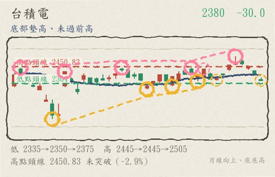
今天帶量收黑、跌破月線 2410，離高點頸線 2450.83 還差 2.9%，底部還在墊高（但高點沒同步創高）。
- 月線位置：收盤 2380 在月線 2410 之下；5 日線 2435 也在月線之上（短均在上）；月線向上、5 日線向上
- 量能：成交量是 20 日均量的 1.25 倍，比 20 日均量大不少；收黑卻量增，量價背離
- 關鍵價位：高點頸線 2450.83 還沒突破，差 2.9%；最近轉折高點 2505（低於 5.0%）；最近轉折低點 2375（高於 0.2%）
- 轉折結構：低點 2335、2350、2375 墊高 1.7%（底底高），但高點 2445、2445、2505 沒有同步創高；還沒確認的轉折低點 09-03 2380、09-14 2380；還沒確認的轉折高點 09-01 2440（圖上虛線小圈）
高點墊高、底部不穩 成交金額 278.71 億・全榜第 2 名（上市第 2 名）
好條件 6/8：站上月線、月線向上、頭頭高、突破頸線、相對大盤強、外資買超
不好條件 1/8：今日下跌
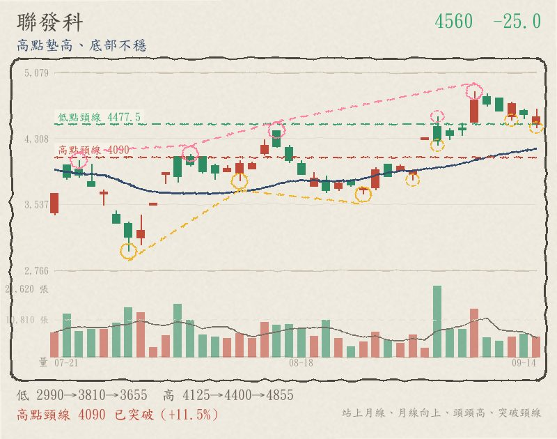
今天收黑、成交量也比平均少、站上月線 4187.25，已站上高點頸線 4482.5，高點還在墊高（但底部沒同步墊高）。
- 月線位置：收盤 4560 在月線 4187.25 之上；5 日線 4640 也在月線之上（短均在上）；月線向上、5 日線向上
- 量能：成交量是 20 日均量的 0.81 倍，比 20 日均量少很多
- 關鍵價位：高點頸線 4482.5 已站上；最近轉折高點 4855（低於 6.1%）；最近轉折低點 3655（高於 24.8%）
- 轉折結構：高點 4125、4400、4855 墊高 17.7%（頭頭高），但低點 2990、3810、3655 沒有同步墊高；還沒確認的轉折低點 09-10 4520、09-14 4435；還沒確認的轉折高點 09-02 4565（圖上虛線小圈）
區間或轉弱 成交金額 233.92 億・全榜第 3 名（上市第 3 名）
好條件 1/8：月線向上
不好條件 5/8：今日下跌、相對大盤弱、在月線之下、外資賣超、收盤跌破前一日低點
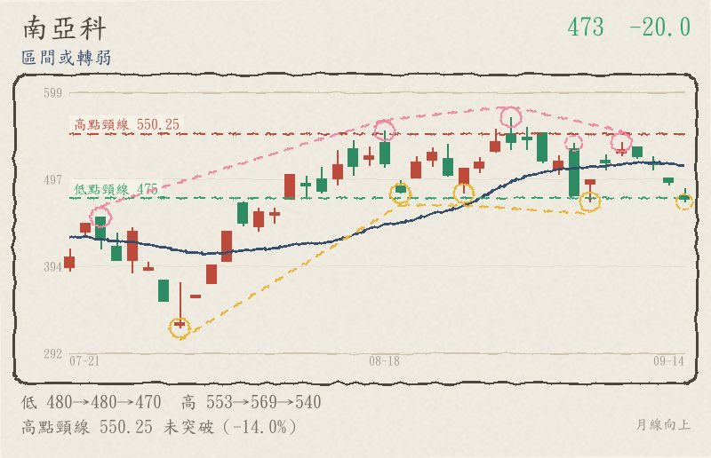
今天收黑、成交量也比平均少、跌破月線 512.725，離高點頸線 550.25 還差 14.0%，轉折還沒走出明顯方向。
- 月線位置：收盤 473 在月線 512.725 之下；5 日線 507 也在月線之下（短均在下）；月線向上、5 日線向上
- 量能：成交量是 20 日均量的 0.69 倍，比 20 日均量少很多
- 關鍵價位：高點頸線 550.25 還沒突破，差 14.0%；最近轉折高點 540（低於 12.4%）；最近轉折低點 470（高於 0.6%）
- 轉折結構：低點 480、480、470 與高點 553、569、540 都沒有明顯遞增，屬於區間震盪或轉弱；還沒確認的轉折低點 09-14 470；還沒確認的轉折高點 09-03 539（圖上虛線小圈）
區間或轉弱 成交金額 200.15 億・全榜第 4 名（上市第 4 名）
好條件 0/8：無
不好條件 7/8：跌破前低、今日下跌、相對大盤弱、在月線之下、外資賣超、月線下彎、收盤跌破前一日低點
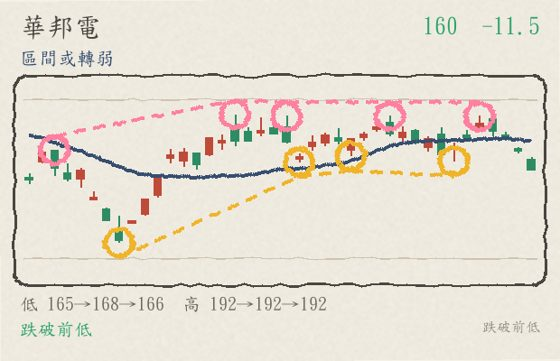
今天收黑、成交量也比平均少、跌破月線 177.475，跌破前一個轉折低點（高點頸線 190.9 還在收盤上方），轉折還沒走出明顯方向。
- 月線位置：收盤 160 在月線 177.475 之下；5 日線 176.4 也在月線之下（短均在下）；月線走平或向下、5 日線向上
- 量能：成交量是 20 日均量的 0.92 倍，比 20 日均量少一些
- 關鍵價位：高點頸線 190.9 還沒突破、還在收盤上方 16.2%；最近轉折高點 192（低於 16.7%）；最近轉折低點 165.5（低於 3.3%）
- 轉折結構：低點 165、168.5、165.5 與高點 192、192、192 都沒有明顯遞增，屬於區間震盪或轉弱；還沒確認的轉折低點 09-14 160；還沒確認的轉折高點 09-03 185.5（圖上虛線小圈）
底部墊高、突破前高 成交金額 185.28 億・全榜第 5 名（上市第 5 名）
好條件 6/8：站上月線、月線向上、底底高、頭頭高、相對大盤強、外資買超
不好條件 0/8：無
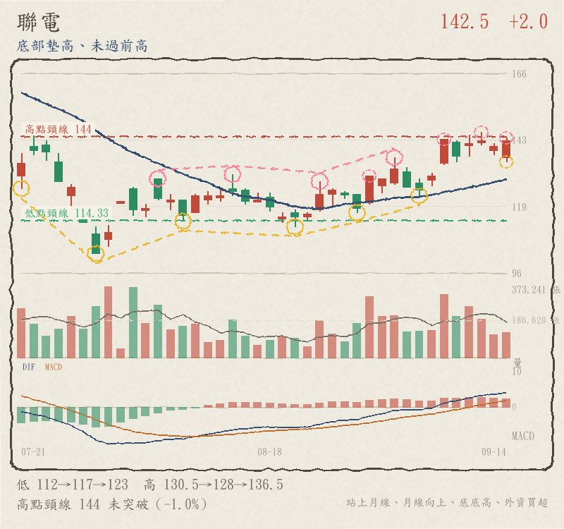
今天收紅、但成交量比平均少、站上月線 128.825，離高點頸線 144 還差 1.0%，轉折結構仍是底底高＋頭頭高。
- 月線位置：收盤 142.5 在月線 128.825 之上；5 日線 140.8 也在月線之上（短均在上）；月線向上、5 日線向上
- 量能：成交量是 20 日均量的 0.80 倍，比 20 日均量少很多；收紅但量縮，量價背離
- 關鍵價位：高點頸線 144 還沒突破，差 1.0%；最近轉折高點 136.5（高於 4.4%）；最近轉折低點 123（高於 15.9%）
- 轉折結構：低點 112、117、123 一路墊高 9.8%、高點 130.5、128、136.5 也一路墊高 6.6%，是底底高＋頭頭高；還沒確認的轉折低點 09-14 135；還沒確認的轉折高點 09-10 145.5、09-14 143.5（圖上虛線小圈）
高點墊高、底部不穩 成交金額 166.68 億・全榜第 7 名（上市第 6 名）
好條件 5/8：站上月線、月線向上、頭頭高、相對大盤強、量價攻擊（收紅＋大量）
不好條件 1/8：外資賣超
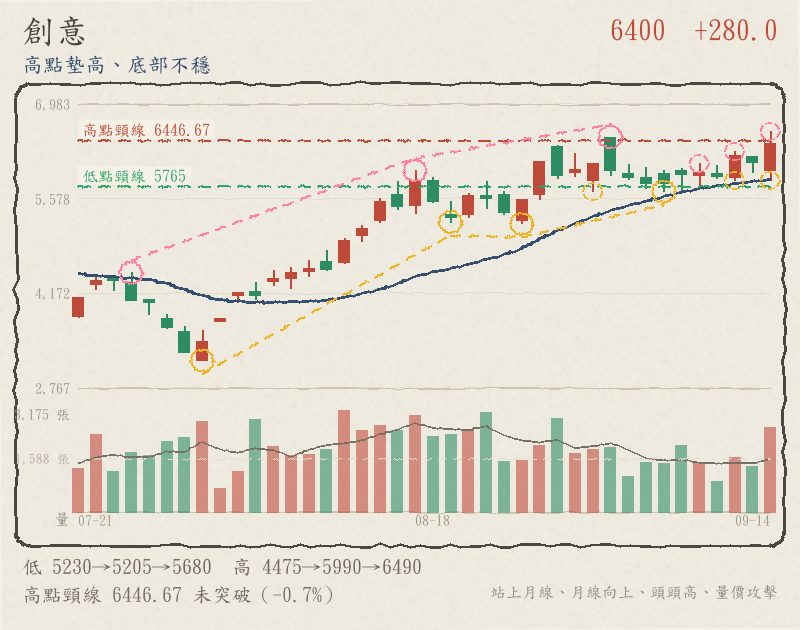
今天帶量收紅、站上月線 5861，離高點頸線 6532.5 還差 2.0%，高點還在墊高（但底部沒同步墊高）。
- 月線位置：收盤 6400 在月線 5861 之上；5 日線 6126 也在月線之上（短均在上）；月線向上、5 日線向上
- 量能：成交量是 20 日均量的 1.35 倍，比 20 日均量大不少；收紅又量增，量價配合
- 關鍵價位：高點頸線 6532.5 還沒突破，差 2.0%；最近轉折高點 6490（低於 1.4%）；最近轉折低點 5680（高於 12.7%）
- 轉折結構：高點 4475、5990、6490 墊高 45.0%（頭頭高），但低點 5230、5205、5680 沒有同步墊高；還沒確認的轉折低點 09-10 5850、09-14 5850；還沒確認的轉折高點 09-10 6275、09-14 6575（圖上虛線小圈）
上升趨勢（底底高＋頭頭高） 成交金額 161.67 億・全榜第 8 名（上市第 7 名）
好條件 4/8：月線向上、底底高、頭頭高、外資買超
不好條件 6/8：跌破前低、今日下跌、相對大盤弱、在月線之下、量增下跌（出貨）、收盤跌破前一日低點
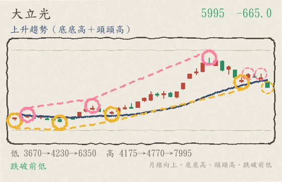
今天帶量收黑、跌破月線 6516.75，跌破前一個轉折低點（高點頸線 6915 還在收盤上方），轉折結構仍是底底高＋頭頭高。
- 月線位置：收盤 5995 在月線 6516.75 之下；5 日線 6549 也在月線之上（短均在上）；月線向上、5 日線走平或向下
- 量能：成交量是 20 日均量的 1.08 倍，比 20 日均量大一些；收黑卻量增，量價背離
- 關鍵價位：高點頸線 6915 還沒突破、還在收盤上方 13.3%；最近轉折高點 7995（低於 25.0%）；最近轉折低點 6350（低於 5.6%）
- 轉折結構：低點 3670、4230、6350 一路墊高 73.0%、高點 4175、4770、7995 也一路墊高 91.5%，是底底高＋頭頭高；還沒確認的轉折低點 09-14 5995；還沒確認的轉折高點 09-09 6930、09-11 6900（圖上虛線小圈）
底部墊高、未過前高 成交金額 152.28 億・全榜第 9 名（上市第 8 名）
好條件 3/8：底底高、相對大盤強、外資買超
不好條件 3/8：跌破前低、在月線之下、月線下彎
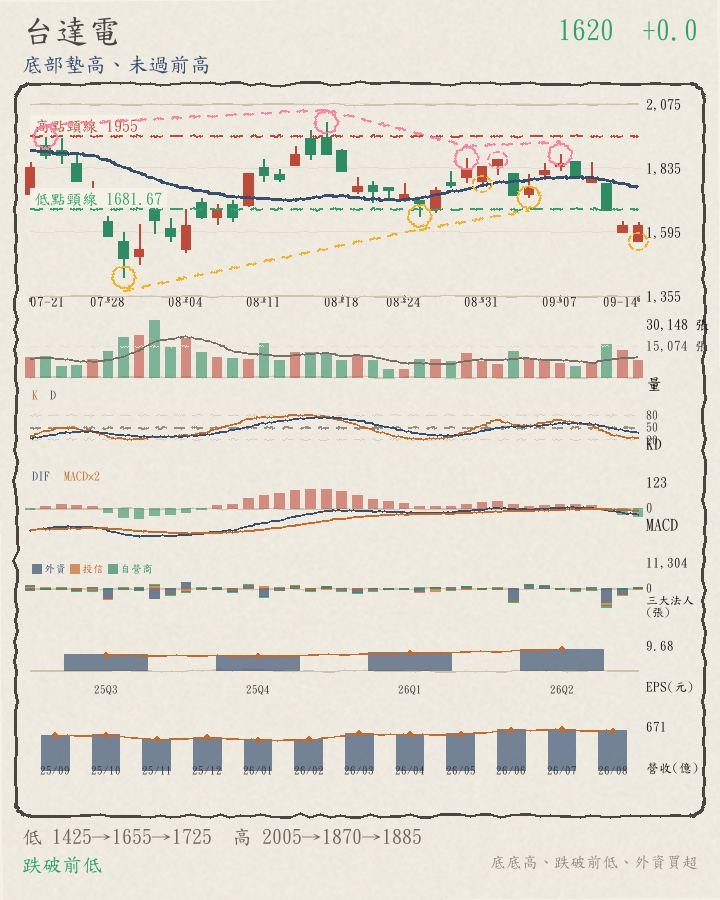
今天收黑、成交量也比平均少、跌破月線 1763，跌破前一個轉折低點（高點頸線 1873.33 還在收盤上方），底部還在墊高（但高點沒同步創高）。
- 月線位置：收盤 1620 在月線 1763 之下；5 日線 1703 也在月線之下（短均在下）；月線走平或向下、5 日線走平或向下
- 量能：成交量是 20 日均量的 0.93 倍，比 20 日均量少一些
- 關鍵價位：高點頸線 1873.33 還沒突破、還在收盤上方 13.5%；最近轉折高點 1885（低於 14.1%）；最近轉折低點 1725（低於 6.1%）
- 轉折結構：低點 1425、1655、1725 墊高 21.1%（底底高），但高點 2005、1870、1885 沒有同步創高；還沒確認的轉折低點 08-31 1775、09-14 1560；還沒確認的轉折高點 09-01 1865（圖上虛線小圈）
底部墊高、未過前高 成交金額 125.68 億・全榜第 10 名（上市第 9 名）
好條件 4/8：站上月線、月線向上、底底高、相對大盤強
不好條件 2/8：今日下跌、外資賣超
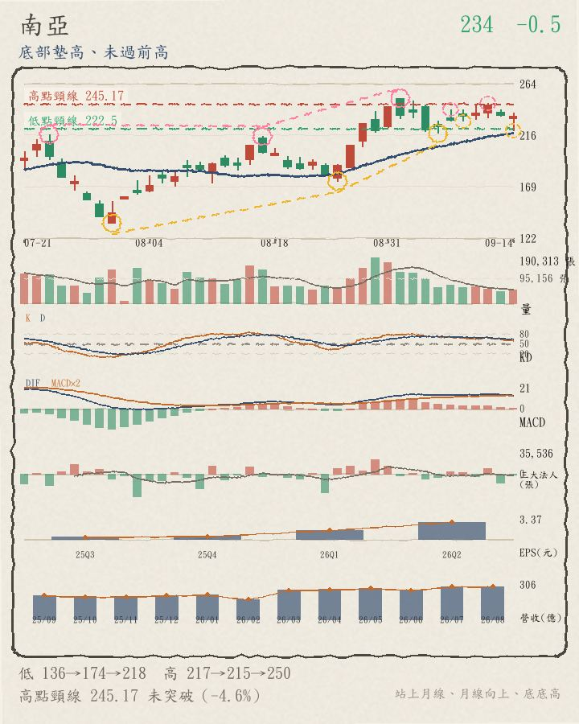
今天收黑、成交量也比平均少、站上月線 218.225，離高點頸線 245.17 還差 4.6%，底部還在墊高（但高點沒同步創高）。
- 月線位置：收盤 234 在月線 218.225 之上；5 日線 236.8 也在月線之上（短均在上）；月線向上、5 日線向上
- 量能：成交量是 20 日均量的 0.59 倍，比 20 日均量少很多
- 關鍵價位：高點頸線 245.17 還沒突破，差 4.6%；最近轉折高點 250（低於 6.4%）；最近轉折低點 218（高於 7.3%）
- 轉折結構：低點 135.5、174、218 墊高 60.9%（底底高），但高點 217、215、250 沒有同步創高；還沒確認的轉折低點 09-08 229、09-14 220.5；還沒確認的轉折高點 09-07 240、09-10 245.5（圖上虛線小圈）
區間或轉弱 成交金額 125.12 億・全榜第 11 名（上市第 10 名）
好條件 1/8：外資買超
不好條件 4/8：今日下跌、相對大盤弱、在月線之下、月線下彎
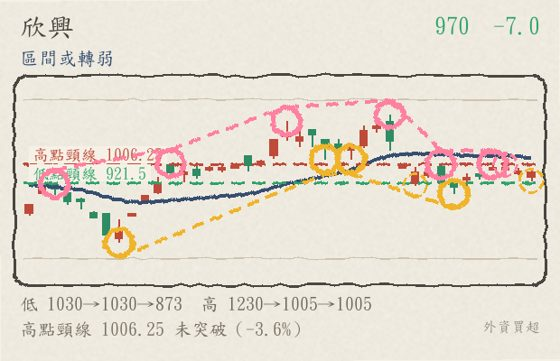
今天收黑、成交量也比平均少、跌破月線 1036.25，離高點頸線 1006.25 還差 3.6%，轉折還沒走出明顯方向。
- 月線位置：收盤 970 在月線 1036.25 之下；5 日線 977.6 也在月線之下（短均在下）；月線走平或向下、5 日線向上
- 量能：成交量是 20 日均量的 0.50 倍，比 20 日均量少很多
- 關鍵價位：高點頸線 1006.25 還沒突破，差 3.6%；最近轉折高點 1005（低於 3.5%）；最近轉折低點 873（高於 11.1%）
- 轉折結構：低點 1030、1030、873 與高點 1230、1005、1005 都沒有明顯遞增，屬於區間震盪或轉弱；還沒確認的轉折低點 09-01 911、09-14 932；還沒確認的轉折高點 09-10 1005（圖上虛線小圈）
區間或轉弱 成交金額 120.54 億・全榜第 12 名（上市第 11 名）
好條件 2/8：相對大盤強、外資買超
不好條件 2/8：在月線之下、月線下彎
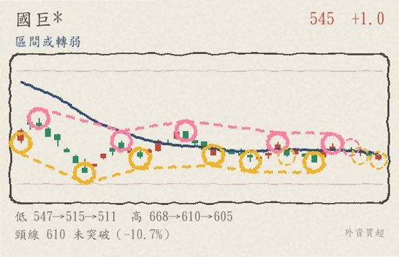
今天收紅、但成交量比平均少、跌破月線 558，離高點頸線 611 還差 10.8%，轉折還沒走出明顯方向。
- 月線位置：收盤 545 在月線 558 之下；5 日線 558.6 也在月線之上（短均在上）；月線走平或向下、5 日線向上
- 量能：成交量是 20 日均量的 0.54 倍，比 20 日均量少很多；收紅但量縮，量價背離
- 關鍵價位：高點頸線 611 還沒突破，差 10.8%；最近轉折高點 605（低於 9.9%）；最近轉折低點 511（高於 6.7%）
- 轉折結構：低點 547、515、511 與高點 668、610、605 都沒有明顯遞增，屬於區間震盪或轉弱；還沒確認的轉折低點 09-10 543、09-14 520；還沒確認的轉折高點 09-09 585（圖上虛線小圈）
高點墊高、底部不穩 成交金額 96.6 億・全榜第 14 名（上市第 12 名）
好條件 6/8：站上月線、月線向上、頭頭高、相對大盤強、外資買超、量價攻擊（收紅＋大量）
不好條件 0/8：無
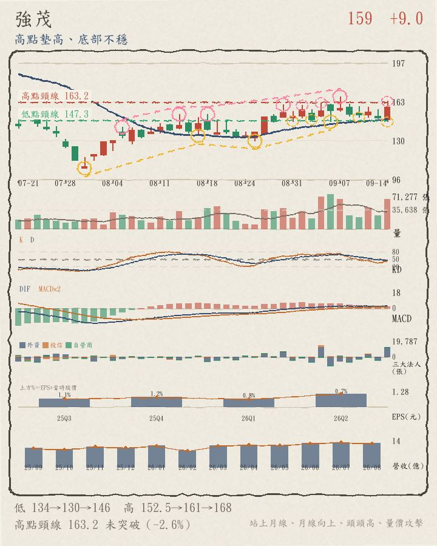
今天帶量收紅、站上月線 148.175，離高點頸線 162 還差 1.9%，高點還在墊高（但底部沒同步墊高）。
- 月線位置：收盤 159 在月線 148.175 之上；5 日線 153.6 也在月線之上（短均在上）；月線向上、5 日線走平或向下
- 量能：成交量是 20 日均量的 1.77 倍，比 20 日均量大不少；收紅又量增，量價配合
- 關鍵價位：高點頸線 162 還沒突破，差 1.9%；最近轉折高點 168（低於 5.4%）；最近轉折低點 146（高於 8.9%）
- 轉折結構：高點 152.5、161、168 墊高 10.2%（頭頭高），但低點 134、129.5、146 沒有同步墊高；還沒確認的轉折低點 09-09 150、09-14 146；還沒確認的轉折高點 09-03 162.5、09-14 164（圖上虛線小圈）
上升趨勢（底底高＋頭頭高） 成交金額 92.29 億・全榜第 15 名（上市第 13 名）
好條件 4/8：站上月線、月線向上、底底高、頭頭高
不好條件 3/8：今日下跌、相對大盤弱、外資賣超
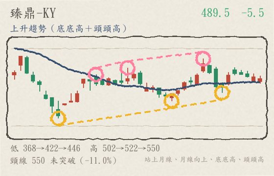
今天收黑、成交量也比平均少、站上月線 479.05，離高點頸線 516 還差 5.1%，轉折結構仍是底底高＋頭頭高。
- 月線位置：收盤 489.5 在月線 479.05 之上；5 日線 497.2 也在月線之上（短均在上）；月線向上、5 日線向上
- 量能：成交量是 20 日均量的 0.64 倍，比 20 日均量少很多
- 關鍵價位：高點頸線 516 還沒突破，差 5.1%；最近轉折高點 550（低於 11.0%）；最近轉折低點 446.5（高於 9.6%）
- 轉折結構：低點 368、421.5、446.5 一路墊高 21.3%、高點 502、522、550 也一路墊高 9.6%，是底底高＋頭頭高；還沒確認的轉折低點 08-31 468、09-14 475.5；還沒確認的轉折高點 09-08 524（圖上虛線小圈）
區間或轉弱 成交金額 90.9 億・全榜第 16 名（上市第 14 名）
好條件 2/8：站上月線、月線向上
不好條件 5/8：今日下跌、相對大盤弱、量增下跌（出貨）、外資賣超、收盤跌破前一日低點
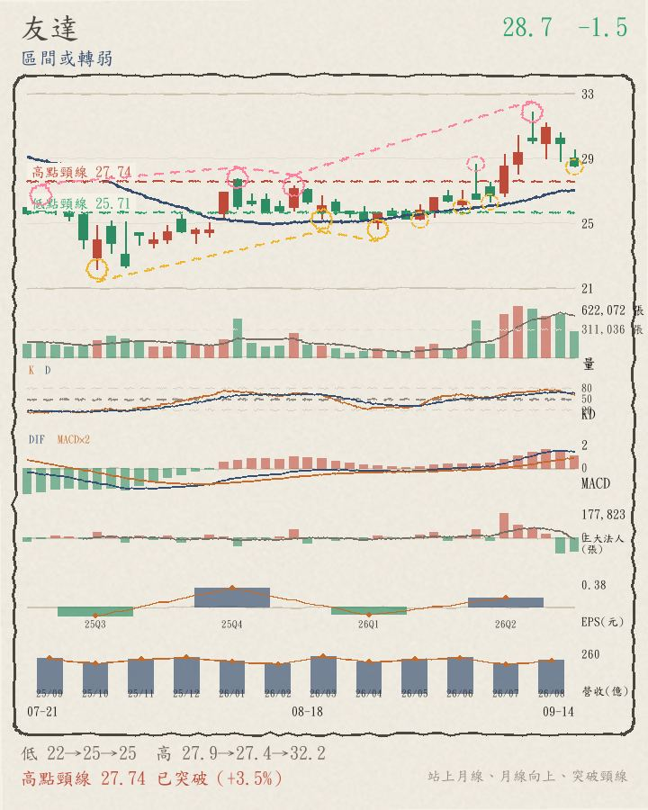
今天帶量收黑、站上月線 27.155，離高點頸線 32.35 還差 11.3%，轉折還沒走出明顯方向。
- 月線位置：收盤 28.7 在月線 27.155 之上；5 日線 30.04 也在月線之上（短均在上）；月線向上、5 日線向上
- 量能：成交量是 20 日均量的 1.27 倍，比 20 日均量大不少；收黑卻量增，量價背離
- 關鍵價位：高點頸線 32.35 還沒突破，差 11.3%；最近轉折高點 32.2（低於 10.9%）；最近轉折低點 24.6（高於 16.7%）
- 轉折結構：低點 22、25.25、24.6 與高點 27.9、27.4、32.2 都沒有明顯遞增，屬於區間震盪或轉弱；還沒確認的轉折低點 09-04 26.35、09-14 28.65；還沒確認的轉折高點 09-03 28.85（圖上虛線小圈）
區間或轉弱 成交金額 89.37 億・全榜第 17 名（上市第 15 名）
好條件 0/8：無
不好條件 6/8：今日下跌、相對大盤弱、在月線之下、外資賣超、月線下彎、收盤跌破前一日低點
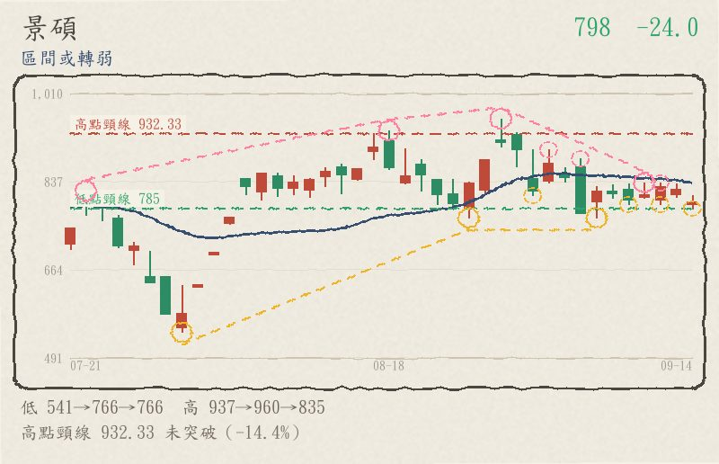
今天收黑、成交量也比平均少、跌破月線 835.25，離高點頸線 835 還差 4.4%，轉折還沒走出明顯方向。
- 月線位置：收盤 798 在月線 835.25 之下；5 日線 811.8 也在月線之下（短均在下）；月線走平或向下、5 日線走平或向下
- 量能：成交量是 20 日均量的 0.56 倍，比 20 日均量少很多
- 關鍵價位：高點頸線 835 還沒突破，差 4.4%；最近轉折高點 835（低於 4.4%）；最近轉折低點 766（高於 4.2%）
- 轉折結構：低點 541、766、766 與高點 937、960、835 都沒有明顯遞增，屬於區間震盪或轉弱；還沒確認的轉折低點 09-10 792、09-14 784；還沒確認的轉折高點 09-03 882、09-10 835（圖上虛線小圈）
底部墊高、突破前高 成交金額 85.26 億・全榜第 18 名（上市第 16 名）
好條件 4/8：站上月線、月線向上、底底高、頭頭高
不好條件 4/8：今日下跌、相對大盤弱、外資賣超、收盤跌破前一日低點
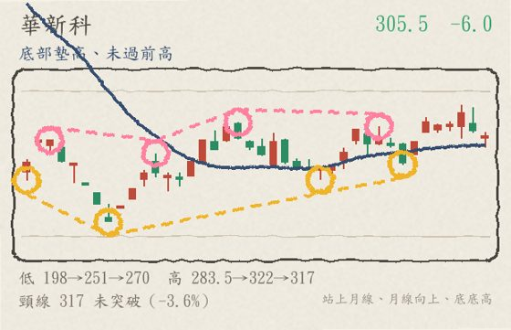
今天收黑、成交量也比平均少、站上月線 294.6，離高點頸線 322.33 還差 5.2%，轉折結構仍是底底高＋頭頭高。
- 月線位置：收盤 305.5 在月線 294.6 之上；5 日線 317.8 也在月線之上（短均在上）；月線向上、5 日線向上
- 量能：成交量是 20 日均量的 0.90 倍，比 20 日均量少一些
- 關鍵價位：高點頸線 322.33 還沒突破，差 5.2%；最近轉折高點 317（低於 3.6%）；最近轉折低點 270（高於 13.1%）
- 轉折結構：低點 198.5、251、270 一路墊高 36.0%、高點 283.5、322、317 也一路墊高 8.5%，是底底高＋頭頭高；還沒確認的轉折低點 09-10 303、09-14 291；還沒確認的轉折高點 09-07 328、09-10 344（圖上虛線小圈）
底部墊高、未過前高 成交金額 77.1 億・全榜第 19 名（上市第 17 名）
好條件 3/8：站上月線、月線向上、底底高
不好條件 4/8：今日下跌、相對大盤弱、量增下跌（出貨）、外資賣超
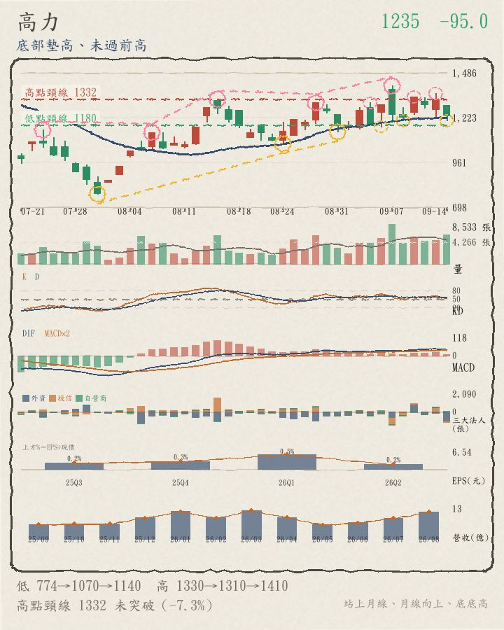
今天帶量收黑、站上月線 1222，離高點頸線 1332 還差 7.3%，底部還在墊高（但高點沒同步創高）。
- 月線位置：收盤 1235 在月線 1222 之上；5 日線 1287 也在月線之上（短均在上）；月線向上、5 日線向上
- 量能：成交量是 20 日均量的 1.53 倍，比 20 日均量大不少；收黑卻量增，量價背離
- 關鍵價位：高點頸線 1332 還沒突破，差 7.3%；最近轉折高點 1410（低於 12.4%）；最近轉折低點 1140（高於 8.3%）
- 轉折結構：低點 774、1070、1140 墊高 47.3%（底底高），但高點 1330、1310、1410 沒有同步創高；還沒確認的轉折低點 09-08 1205、09-14 1205；還沒確認的轉折高點 09-09 1345、09-11 1365（圖上虛線小圈）
區間或轉弱 成交金額 74.96 億・全榜第 21 名（上市第 18 名）
好條件 1/8：外資買超
不好條件 5/8：今日下跌、相對大盤弱、在月線之下、月線下彎、收盤跌破前一日低點
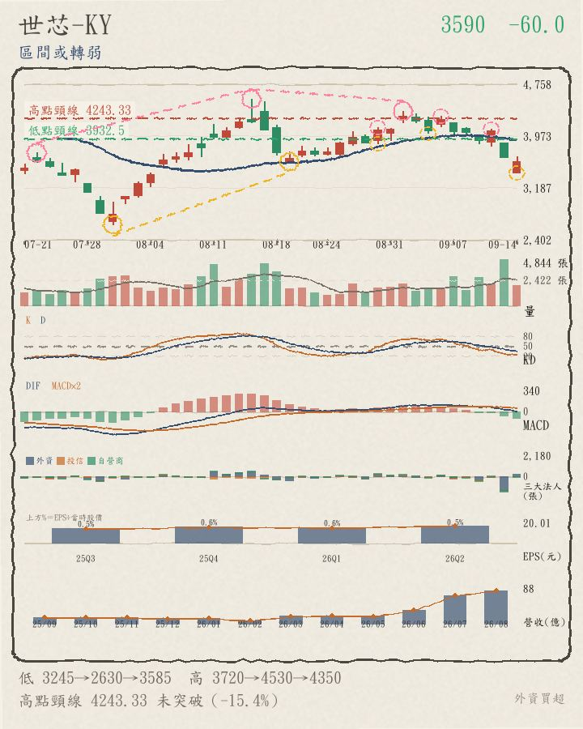
今天收黑、成交量也比平均少、跌破月線 3919，離高點頸線 4090 還差 12.2%，轉折還沒走出明顯方向。
- 月線位置：收盤 3590 在月線 3919 之下；5 日線 3846 也在月線之下（短均在下）；月線走平或向下、5 日線走平或向下
- 量能：成交量是 20 日均量的 0.95 倍，跟 20 日均量差不多
- 關鍵價位：高點頸線 4090 還沒突破，差 12.2%；最近轉折高點 4350（低於 17.5%）；最近轉折低點 3585（高於 0.1%）
- 轉折結構：低點 3245、2630、3585 與高點 3720、4530、4350 都沒有明顯遞增，屬於區間震盪或轉弱；還沒確認的轉折低點 09-03 4010、09-14 3410；還沒確認的轉折高點 09-04 4275、09-10 4075（圖上虛線小圈）
上升趨勢（底底高＋頭頭高） 成交金額 72.84 億・全榜第 24 名（上市第 19 名）
好條件 5/8：站上月線、月線向上、底底高、頭頭高、外資買超
不好條件 2/8：今日下跌、相對大盤弱
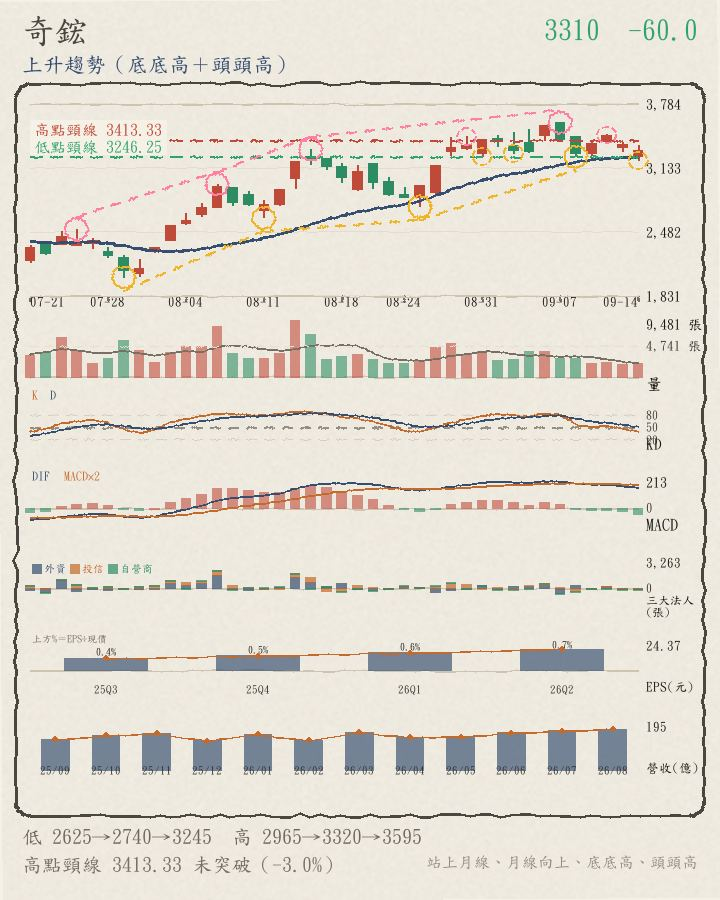
今天收黑、成交量也比平均少、站上月線 3244，離高點頸線 3413.33 還差 3.0%，轉折結構仍是底底高＋頭頭高。
- 月線位置：收盤 3310 在月線 3244 之上；5 日線 3361 也在月線之上（短均在上）；月線向上、5 日線走平或向下
- 量能：成交量是 20 日均量的 0.67 倍，比 20 日均量少很多
- 關鍵價位：高點頸線 3413.33 還沒突破，差 3.0%；最近轉折高點 3595（低於 7.9%）；最近轉折低點 3245（高於 2.0%）
- 轉折結構：低點 2625、2740、3245 一路墊高 23.6%、高點 2965、3320、3595 也一路墊高 21.2%，是底底高＋頭頭高；還沒確認的轉折低點 09-02 3280、09-14 3210；還沒確認的轉折高點 08-28 3450、09-10 3470（圖上虛線小圈）
區間或轉弱 成交金額 65.65 億・全榜第 26 名（上市第 20 名）
好條件 1/8：外資買超
不好條件 7/8：跌破前低、今日下跌、相對大盤弱、在月線之下、量增下跌（出貨）、月線下彎、收盤跌破前一日低點
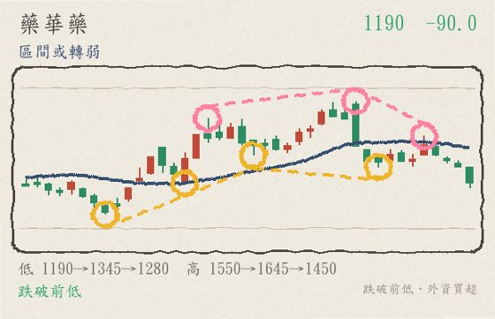
今天帶量收黑、跌破月線 1388.25，跌破前一個轉折低點（高點頸線 1385.11 還在收盤上方），轉折還沒走出明顯方向。
- 月線位置：收盤 1190 在月線 1388.25 之下；5 日線 1308 也在月線之下（短均在下）；月線走平或向下、5 日線走平或向下
- 量能：成交量是 20 日均量的 1.38 倍，比 20 日均量大不少；收黑卻量增，量價背離
- 關鍵價位：高點頸線 1385.11 還沒突破、還在收盤上方 14.1%；最近轉折高點 1450（低於 17.9%）；最近轉折低點 1280（低於 7.0%）
- 轉折結構：低點 1190、1345、1280 與高點 1550、1645、1450 都沒有明顯遞增，屬於區間震盪或轉弱；還沒確認的轉折低點 09-07 1285、09-14 1165；還沒確認的轉折高點 09-03 1375（圖上虛線小圈）
區間或轉弱 成交金額 65.6 億・全榜第 27 名（上市第 21 名）
好條件 0/8：無
不好條件 5/8：今日下跌、相對大盤弱、在月線之下、外資賣超、月線下彎
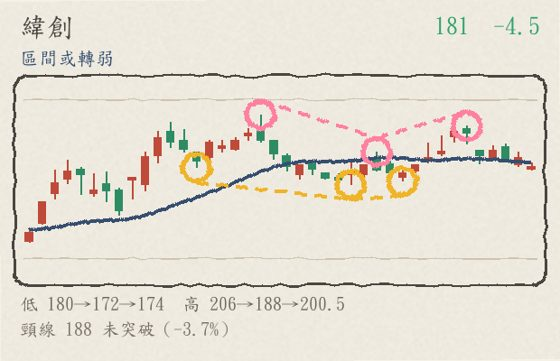
今天收黑、成交量也比平均少、跌破月線 183.4，離高點頸線 188 還差 3.7%，轉折還沒走出明顯方向。
- 月線位置：收盤 181 在月線 183.4 之下；5 日線 185.4 也在月線之上（短均在上）；月線走平或向下、5 日線走平或向下
- 量能：成交量是 20 日均量的 0.65 倍，比 20 日均量少很多
- 關鍵價位：高點頸線 188 還沒突破，差 3.7%；最近轉折高點 200.5（低於 9.7%）；最近轉折低點 174（高於 4.0%）
- 轉折結構：低點 180.5、172.5、174 與高點 206、188、200.5 都沒有明顯遞增，屬於區間震盪或轉弱；還沒確認的轉折低點 09-08 182.5、09-14 179.5；還沒確認的轉折高點 09-10 192（圖上虛線小圈）
區間或轉弱 成交金額 65.19 億・全榜第 28 名（上市第 22 名）
好條件 2/8：相對大盤強、外資買超
不好條件 3/8：今日下跌、在月線之下、月線下彎
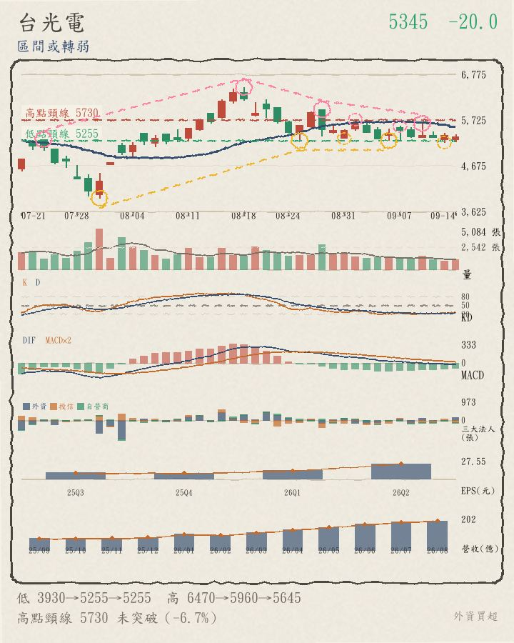
今天收黑、成交量也比平均少、跌破月線 5561.5，離高點頸線 5780 還差 7.5%，轉折還沒走出明顯方向。
- 月線位置：收盤 5345 在月線 5561.5 之下；5 日線 5360 也在月線之下（短均在下）；月線走平或向下、5 日線走平或向下
- 量能：成交量是 20 日均量的 0.69 倍，比 20 日均量少很多
- 關鍵價位：高點頸線 5780 還沒突破，差 7.5%；最近轉折高點 5645（低於 5.3%）；最近轉折低點 5255（高於 1.7%）
- 轉折結構：低點 3930、5255、5255 與高點 6470、5960、5645 都沒有明顯遞增，屬於區間震盪或轉弱；還沒確認的轉折低點 08-31 5300、09-11 5210；還沒確認的轉折高點 09-01 5735、09-07 5580（圖上虛線小圈）
區間或轉弱 成交金額 64.45 億・全榜第 29 名（上市第 23 名）
好條件 1/8：外資買超
不好條件 4/8：今日下跌、相對大盤弱、在月線之下、月線下彎
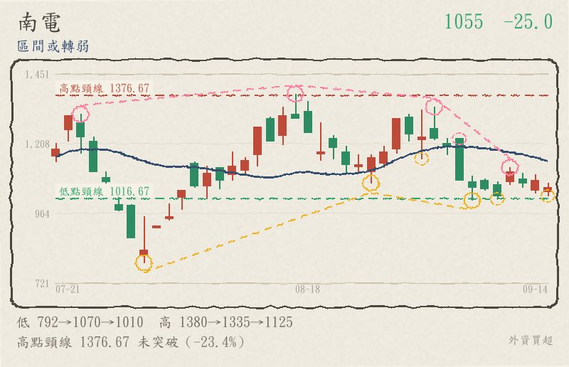
今天收黑、成交量也比平均少、跌破月線 1147.25，離高點頸線 1322.5 還差 20.2%，轉折還沒走出明顯方向。
- 月線位置：收盤 1055 在月線 1147.25 之下；5 日線 1068 也在月線之下（短均在下）；月線走平或向下、5 日線走平或向下
- 量能：成交量是 20 日均量的 0.51 倍，比 20 日均量少很多
- 關鍵價位：高點頸線 1322.5 還沒突破，差 20.2%；最近轉折高點 1125（低於 6.2%）；最近轉折低點 1010（高於 4.5%）
- 轉折結構：低點 792、1070、1010 與高點 1380、1335、1125 都沒有明顯遞增，屬於區間震盪或轉弱；還沒確認的轉折低點 09-08 1015、09-14 1025；還沒確認的轉折高點 09-03 1225（圖上虛線小圈）
上升趨勢（底底高＋頭頭高） 成交金額 63.15 億・全榜第 31 名（上市第 24 名）
好條件 5/8：站上月線、底底高、頭頭高、相對大盤強、外資買超
不好條件 1/8：月線下彎
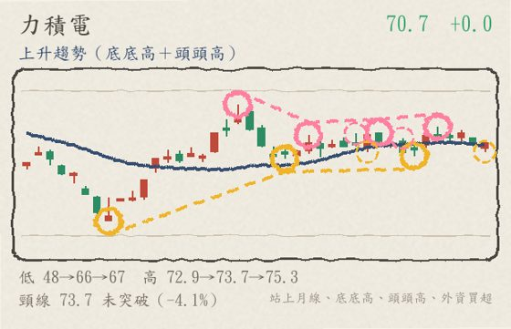
今天收黑、成交量也比平均少、站上月線 70.235，離高點頸線 73.44 還差 3.7%，轉折結構仍是底底高＋頭頭高。
- 月線位置：收盤 70.7 在月線 70.235 之上；5 日線 71.94 也在月線之上（短均在上）；月線走平或向下、5 日線向上
- 量能：成交量是 20 日均量的 0.60 倍，比 20 日均量少很多
- 關鍵價位：高點頸線 73.44 還沒突破，差 3.7%；最近轉折高點 75.3（低於 6.1%）；最近轉折低點 67（高於 5.5%）
- 轉折結構：低點 48、66.2、67 一路墊高 39.6%、高點 72.9、73.7、75.3 也一路墊高 3.3%，是底底高＋頭頭高；還沒確認的轉折低點 08-31 68、09-14 68.1；還沒確認的轉折高點 08-28 73.3、09-03 72（圖上虛線小圈）
區間或轉弱 成交金額 62.33 億・全榜第 32 名（上市第 25 名）
好條件 2/8：相對大盤強、外資買超
不好條件 2/8：在月線之下、月線下彎
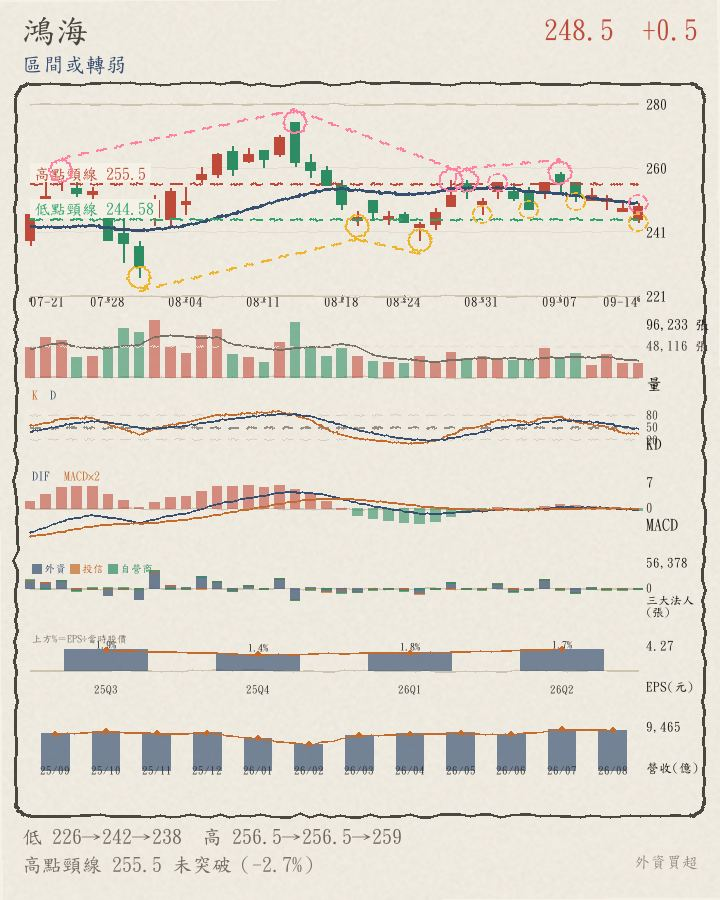
今天收紅、但成交量比平均少、跌破月線 249.575，離高點頸線 255.5 還差 2.7%，轉折還沒走出明顯方向。
- 月線位置：收盤 248.5 在月線 249.575 之下；5 日線 250.2 也在月線之上（短均在上）；月線走平或向下、5 日線走平或向下
- 量能：成交量是 20 日均量的 0.69 倍，比 20 日均量少很多；收紅但量縮，量價背離
- 關鍵價位：高點頸線 255.5 還沒突破，差 2.7%；最近轉折高點 259（低於 4.1%）；最近轉折低點 238（高於 4.4%）
- 轉折結構：低點 226.5、242.5、238 與高點 256.5、256.5、259 都沒有明顯遞增，屬於區間震盪或轉弱；還沒確認的轉折低點 09-08 250、09-14 243.5；還沒確認的轉折高點 09-01 256、09-14 249.5（圖上虛線小圈）
高點墊高、底部不穩 成交金額 61.18 億・全榜第 33 名（上市第 26 名）
好條件 3/8：月線向上、頭頭高、相對大盤強
不好條件 4/8：今日下跌、在月線之下、量增下跌（出貨）、外資賣超
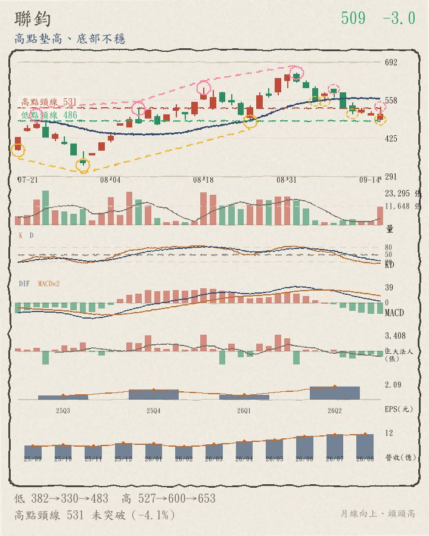
今天帶量收黑、跌破月線 563，離高點頸線 531 還差 4.1%，高點還在墊高（但底部沒同步墊高）。
- 月線位置：收盤 509 在月線 563 之下；5 日線 518.2 也在月線之下（短均在下）；月線向上、5 日線走平或向下
- 量能：成交量是 20 日均量的 1.15 倍，比 20 日均量大不少；收黑卻量增，量價背離
- 關鍵價位：高點頸線 531 還沒突破，差 4.1%；最近轉折高點 653（低於 22.1%）；最近轉折低點 483（高於 5.4%）
- 轉折結構：高點 527、600、653 墊高 23.9%（頭頭高），但低點 382.5、330、483 沒有同步墊高；還沒確認的轉折低點 09-09 510、09-14 489；還沒確認的轉折高點 09-07 596、09-14 535（圖上虛線小圈）
剛突破前高 成交金額 61.07 億・全榜第 34 名（上市第 27 名）
好條件 3/8：站上月線、月線向上、頭頭高
不好條件 4/8：今日下跌、相對大盤弱、外資賣超、收盤跌破前一日低點
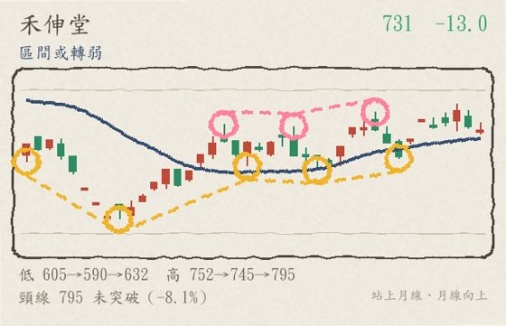
今天收黑、成交量也比平均少、站上月線 703.05，離高點頸線 810.5 還差 9.8%，高點還在墊高（但底部沒同步墊高）。
- 月線位置：收盤 731 在月線 703.05 之上；5 日線 756.6 也在月線之上（短均在上）；月線向上、5 日線向上
- 量能：成交量是 20 日均量的 0.95 倍，跟 20 日均量差不多
- 關鍵價位：高點頸線 810.5 還沒突破，差 9.8%；最近轉折高點 795（低於 8.1%）；最近轉折低點 632（高於 15.7%）
- 轉折結構：高點 752、745、795 墊高 3.9%（頭頭高），但低點 605、590、632 沒有同步墊高；還沒確認的轉折低點 09-10 730、09-14 717；還沒確認的轉折高點 09-10 826（圖上虛線小圈）
剛突破前高 成交金額 57.94 億・全榜第 37 名（上市第 28 名）
好條件 3/8：站上月線、月線向上、頭頭高
不好條件 3/8：今日下跌、相對大盤弱、外資賣超
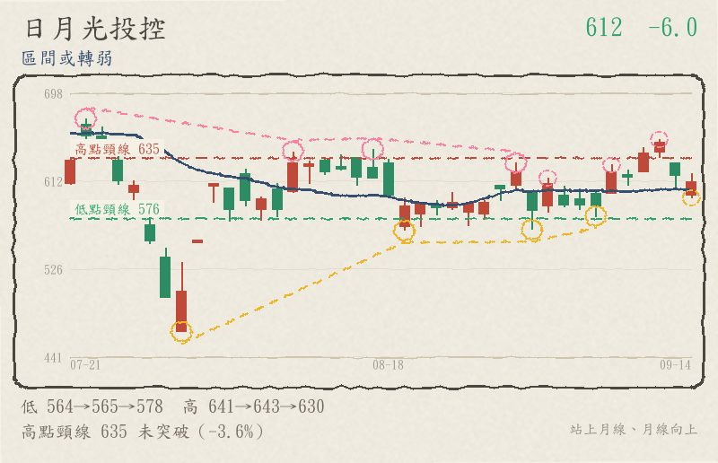
今天收黑、成交量也比平均少、站上月線 604.2，離高點頸線 635 還差 3.6%，高點還在墊高（但底部沒同步墊高）。
- 月線位置：收盤 612 在月線 604.2 之上；5 日線 627.6 也在月線之上（短均在上）；月線向上、5 日線向上
- 量能：成交量是 20 日均量的 0.54 倍，比 20 日均量少很多
- 關鍵價位：高點頸線 635 還沒突破，差 3.6%；最近轉折高點 630（低於 2.9%）；最近轉折低點 578（高於 5.9%）
- 轉折結構：高點 641、643、630 墊高 3.7%（頭頭高），但低點 564、565、578 沒有同步墊高；還沒確認的轉折低點 09-14 596；還沒確認的轉折高點 09-07 628、09-10 653（圖上虛線小圈）
區間或轉弱 成交金額 57.46 億・全榜第 38 名（上市第 29 名）
好條件 2/8：相對大盤強、外資買超
不好條件 5/8：跌破前低、今日下跌、在月線之下、量增下跌（出貨）、月線下彎
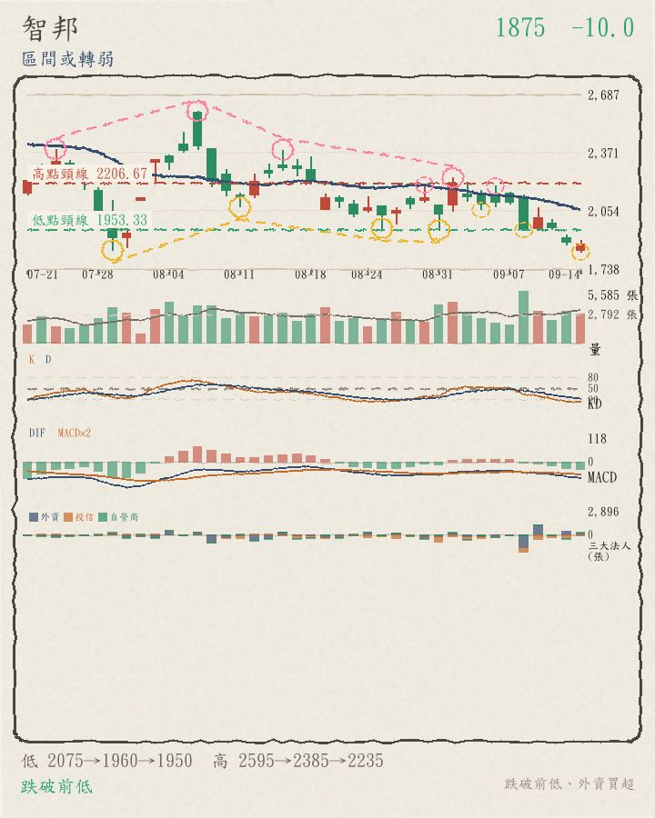
今天收黑、跌破月線 2061.25，跌破前一個轉折低點（高點頸線 2206.67 還在收盤上方），轉折還沒走出明顯方向。
- 月線位置：收盤 1875 在月線 2061.25 之下；5 日線 1939 也在月線之下（短均在下）；月線走平或向下、5 日線走平或向下
- 量能：成交量是 20 日均量的 1.03 倍，跟 20 日均量差不多
- 關鍵價位：高點頸線 2206.67 還沒突破、還在收盤上方 15.0%；最近轉折高點 2235（低於 16.1%）；最近轉折低點 1950（低於 3.8%）
- 轉折結構：低點 2075、1960、1950 與高點 2595、2385、2235 都沒有明顯遞增，屬於區間震盪或轉弱；還沒確認的轉折低點 09-08 1950、09-14 1830；還沒確認的轉折高點 08-28 2195、09-04 2190（圖上虛線小圈）
底部墊高、未過前高 成交金額 57.36 億・全榜第 39 名（上市第 30 名）
好條件 4/8：站上月線、月線向上、底底高、相對大盤強
不好條件 1/8：外資賣超
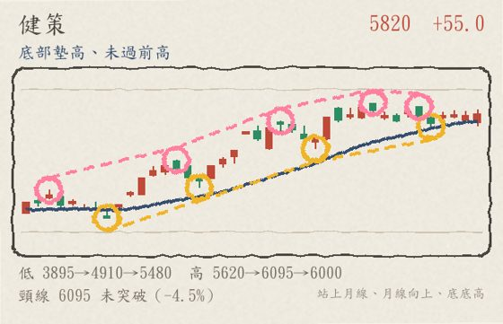
今天收紅、但成交量比平均少、站上月線 5629.75，離高點頸線 5975 還差 2.6%，底部還在墊高（但高點沒同步創高）。
- 月線位置：收盤 5820 在月線 5629.75 之上；5 日線 5737 也在月線之上（短均在上）；月線向上、5 日線走平或向下
- 量能：成交量是 20 日均量的 0.73 倍，比 20 日均量少很多；收紅但量縮，量價背離
- 關鍵價位：高點頸線 5975 還沒突破，差 2.6%；最近轉折高點 6000（低於 3.0%）；最近轉折低點 5480（高於 6.2%）
- 轉折結構：低點 3895、4910、5480 墊高 40.7%（底底高），但高點 5620、6095、6000 沒有同步創高；還沒確認的轉折低點 09-03 5590、09-14 5500；還沒確認的轉折高點 09-10 5885、09-14 5920（圖上虛線小圈）
底部墊高、未過前高 成交金額 51.79 億・全榜第 41 名（上市第 31 名）
好條件 2/8：底底高、相對大盤強
不好條件 5/8：跌破前低、今日下跌、在月線之下、外資賣超、月線下彎
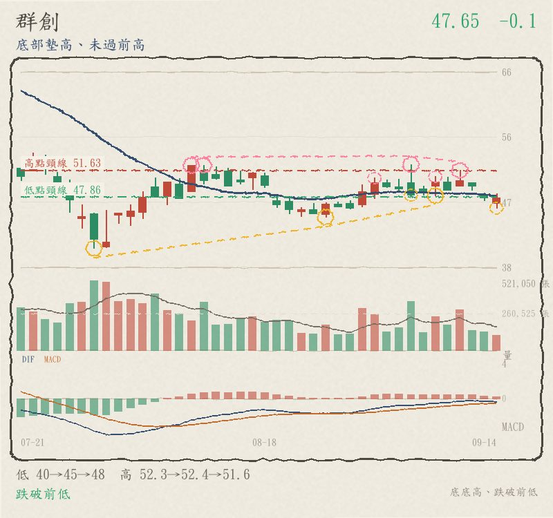
今天收黑、成交量也比平均少、跌破月線 48.007，跌破前一個轉折低點（高點頸線 51.63 還在收盤上方），底部還在墊高（但高點沒同步創高）。
- 月線位置：收盤 47.65 在月線 48.007 之下；5 日線 48.72 也在月線之上（短均在上）；月線走平或向下、5 日線走平或向下
- 量能：成交量是 20 日均量的 0.55 倍，比 20 日均量少很多
- 關鍵價位：高點頸線 51.63 還沒突破、還在收盤上方 7.7%；最近轉折高點 51.6（低於 7.7%）；最近轉折低點 48（低於 0.7%）
- 轉折結構：低點 40.5、44.95、48 墊高 18.5%（底底高），但高點 52.3、52.4、51.6 沒有同步創高；還沒確認的轉折低點 09-03 48.1、09-14 46.25；還沒確認的轉折高點 08-31 50.5、09-07 50.7（圖上虛線小圈）
區間或轉弱 成交金額 51.38 億・全榜第 42 名（上市第 32 名）
好條件 3/8：月線向上、相對大盤強、外資買超
不好條件 1/8：在月線之下
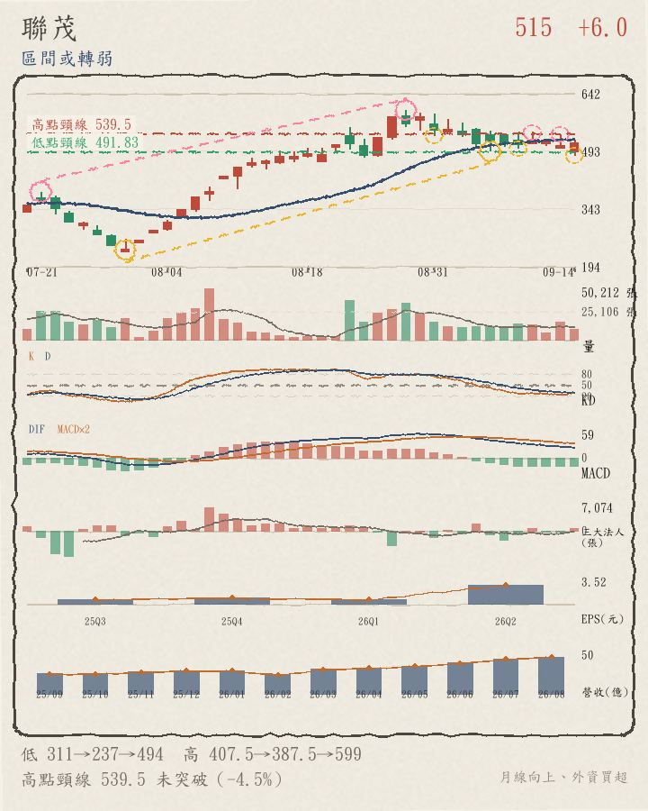
今天收紅、但成交量比平均少、跌破月線 524.375，離高點頸線 539.5 還差 4.5%，轉折還沒走出明顯方向。
- 月線位置：收盤 515 在月線 524.375 之下；5 日線 515.2 也在月線之下（短均在下）；月線向上、5 日線走平或向下
- 量能：成交量是 20 日均量的 0.64 倍，比 20 日均量少很多；收紅但量縮，量價背離
- 關鍵價位：高點頸線 539.5 還沒突破，差 4.5%；最近轉折高點 599（低於 14.0%）；最近轉折低點 493.5（高於 4.4%）
- 轉折結構：低點 311、237、493.5 與高點 407.5、387.5、599 都沒有明顯遞增，屬於區間震盪或轉弱；還沒確認的轉折低點 09-08 500、09-14 482；還沒確認的轉折高點 09-09 542、09-11 537（圖上虛線小圈）
底部墊高、未過前高 成交金額 47.7 億・全榜第 44 名（上市第 33 名）
好條件 3/8：月線向上、底底高、外資買超
不好條件 4/8：跌破前低、今日下跌、相對大盤弱、在月線之下
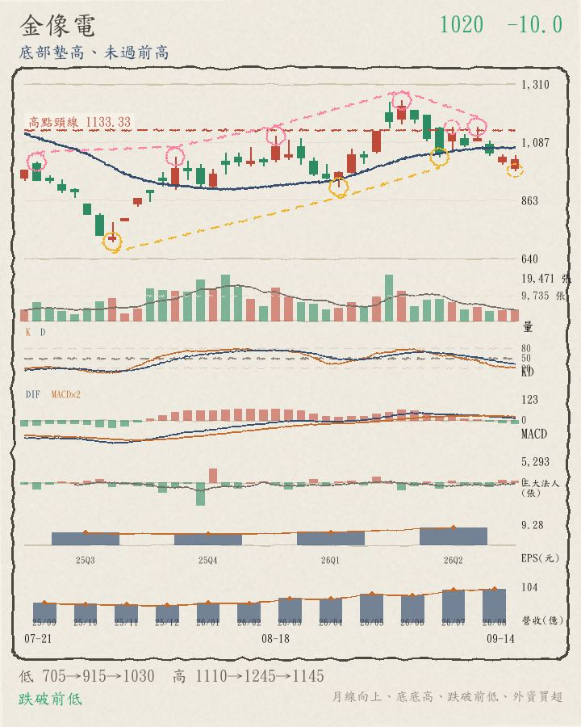
今天收黑、成交量也比平均少、跌破月線 1065.95，跌破前一個轉折低點（高點頸線 1133.33 還在收盤上方），底部還在墊高（但高點沒同步創高）。
- 月線位置：收盤 1020 在月線 1065.95 之下；5 日線 1054 也在月線之下（短均在下）；月線向上、5 日線走平或向下
- 量能：成交量是 20 日均量的 0.59 倍，比 20 日均量少很多
- 關鍵價位：高點頸線 1133.33 還沒突破、還在收盤上方 10.0%；最近轉折高點 1145（低於 10.9%）；最近轉折低點 1030（低於 1.0%）
- 轉折結構：低點 705、915、1030 墊高 46.1%（底底高），但高點 1110、1245、1145 沒有同步創高；還沒確認的轉折低點 09-14 978；還沒確認的轉折高點 09-07 1145（圖上虛線小圈）
上升趨勢（底底高＋頭頭高） 成交金額 47.07 億・全榜第 45 名（上市第 34 名）
好條件 5/8：站上月線、月線向上、底底高、頭頭高、外資買超
不好條件 4/8：跌破前低、今日下跌、相對大盤弱、收盤跌破前一日低點
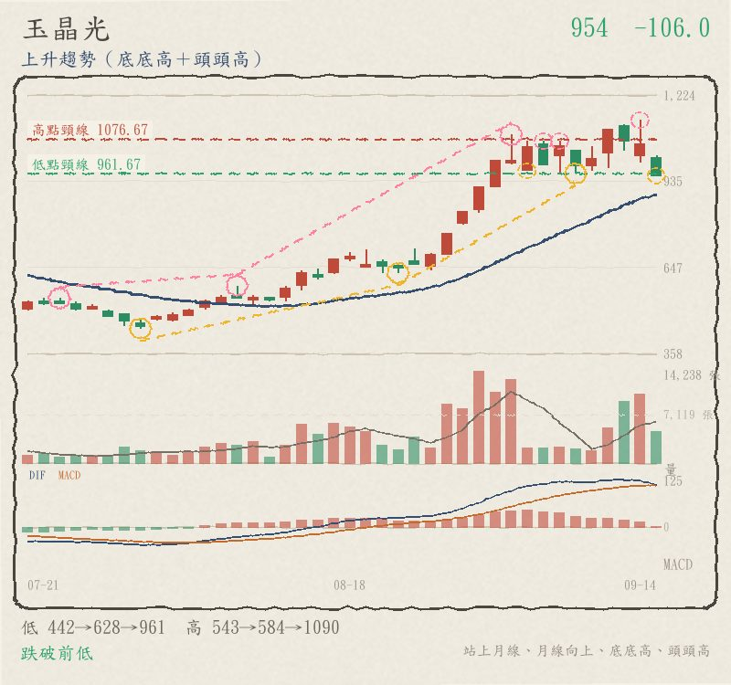
今天收黑、成交量也比平均少、站上月線 889.9，跌破前一個轉折低點（高點頸線 1076.67 還在收盤上方），轉折結構仍是底底高＋頭頭高。
- 月線位置：收盤 954 在月線 889.9 之上；5 日線 1040.8 也在月線之上（短均在上）；月線向上、5 日線向上
- 量能：成交量是 20 日均量的 0.81 倍，比 20 日均量少很多
- 關鍵價位：高點頸線 1076.67 還沒突破、還在收盤上方 11.4%；最近轉折高點 1090（低於 12.5%）；最近轉折低點 961（低於 0.7%）
- 轉折結構：低點 442、628、961 一路墊高 117.4%、高點 543、584、1090 也一路墊高 100.7%，是底底高＋頭頭高；還沒確認的轉折低點 09-02 970、09-14 954；還沒確認的轉折高點 09-04 1070、09-11 1140（圖上虛線小圈）
上升趨勢（底底高＋頭頭高） 成交金額 45.18 億・全榜第 46 名（上市第 35 名）
好條件 4/8：月線向上、底底高、頭頭高、突破頸線
不好條件 5/8：今日下跌、相對大盤弱、在月線之下、外資賣超、收盤跌破前一日低點
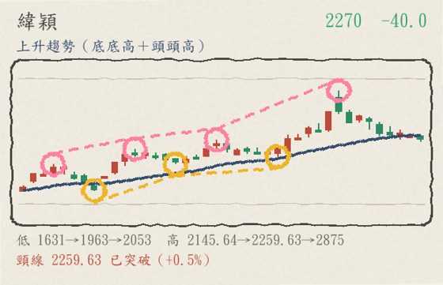
今天收黑、成交量也比平均少、跌破月線 2323.43，已站上高點頸線 1769.31，轉折結構仍是底底高＋頭頭高。
- 月線位置：收盤 2270 在月線 2323.43 之下；5 日線 2318 也在月線之下（短均在下）；月線向上、5 日線走平或向下
- 量能：成交量是 20 日均量的 0.46 倍，比 20 日均量少很多
- 關鍵價位：高點頸線 1769.31 已站上；最近轉折高點 2875（低於 21.0%）；最近轉折低點 2053.44（高於 10.5%）
- 轉折結構：低點 1631.02、1962.92、2053.44 一路墊高 25.9%、高點 2145.64、2259.63、2875 也一路墊高 34.0%，是底底高＋頭頭高；還沒確認的轉折低點 09-10 2270、09-14 2240（圖上虛線小圈）
區間或轉弱 成交金額 42.89 億・全榜第 47 名（上市第 36 名）
好條件 2/8：相對大盤強、外資買超
不好條件 2/8：在月線之下、月線下彎
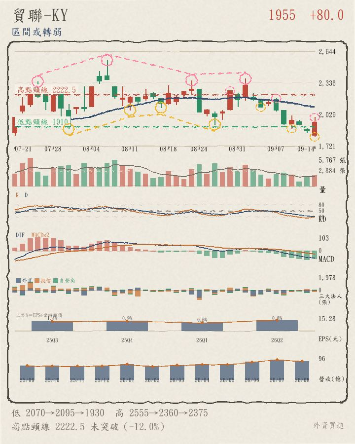
今天收紅、但成交量比平均少、跌破月線 2102.5，離高點頸線 2222.5 還差 12.0%，轉折還沒走出明顯方向。
- 月線位置：收盤 1955 在月線 2102.5 之下；5 日線 1934 也在月線之下（短均在下）；月線走平或向下、5 日線走平或向下
- 量能：成交量是 20 日均量的 0.80 倍，比 20 日均量少很多；收紅但量縮，量價背離
- 關鍵價位：高點頸線 2222.5 還沒突破，差 12.0%；最近轉折高點 2375（低於 17.7%）；最近轉折低點 1930（高於 1.3%）
- 轉折結構：低點 2070、2095、1930 與高點 2555、2360、2375 都沒有明顯遞增，屬於區間震盪或轉弱；還沒確認的轉折低點 09-09 1890、09-14 1810；還沒確認的轉折高點 09-07 2185、09-14 2000（圖上虛線小圈）
底部墊高、未過前高 成交金額 40.22 億・全榜第 48 名（上市第 37 名）
好條件 4/8：月線向上、底底高、突破頸線、相對大盤強
不好條件 3/8：跌破前低、在月線之下、外資賣超
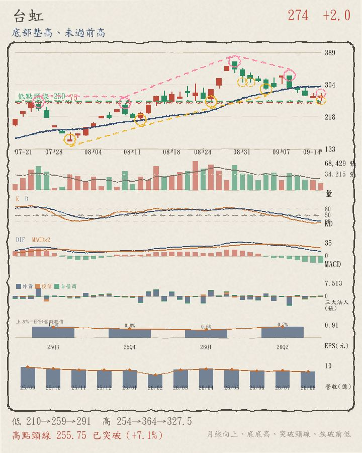
今天收紅、但成交量比平均少、跌破月線 298.45，已站上高點頸線 255.75，底部還在墊高（但高點沒同步創高）。
- 月線位置：收盤 274 在月線 298.45 之下；5 日線 281 也在月線之下（短均在下）；月線向上、5 日線走平或向下
- 量能：成交量是 20 日均量的 0.38 倍，比 20 日均量少很多；收紅但量縮，量價背離
- 關鍵價位：高點頸線 255.75 已站上；最近轉折高點 327.5（低於 16.3%）；最近轉折低點 291（低於 5.8%）
- 轉折結構：低點 210.5、259、291 墊高 38.2%（底底高），但高點 254、364、327.5 沒有同步創高；還沒確認的轉折低點 09-01 309.5、09-14 261；還沒確認的轉折高點 09-14 280（圖上虛線小圈）
高點墊高、底部不穩 成交金額 37.92 億・全榜第 50 名（上市第 38 名）
好條件 2/8：月線向上、頭頭高
不好條件 5/8：今日下跌、相對大盤弱、在月線之下、外資賣超、收盤跌破前一日低點
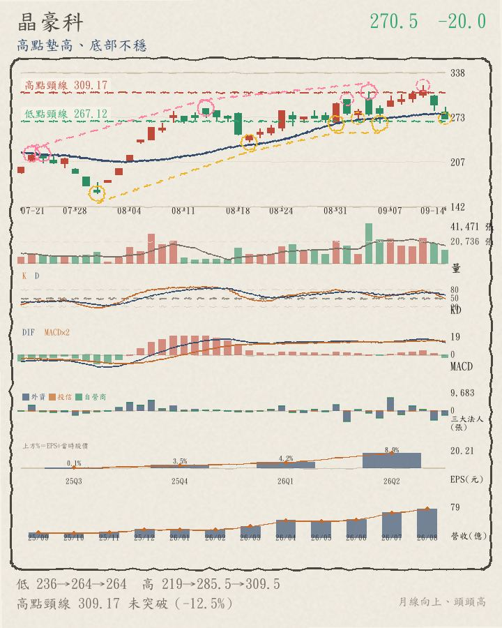
今天收黑、成交量也比平均少、跌破月線 277.625，離高點頸線 304.25 還差 11.1%，高點還在墊高（但底部沒同步墊高）。
- 月線位置：收盤 270.5 在月線 277.625 之下；5 日線 295.6 也在月線之上（短均在上）；月線向上、5 日線向上
- 量能：成交量是 20 日均量的 0.79 倍，比 20 日均量少很多
- 關鍵價位：高點頸線 304.25 還沒突破，差 11.1%；最近轉折高點 309.5（低於 12.6%）；最近轉折低點 263.5（高於 2.7%）
- 轉折結構：高點 219、285.5、309.5 墊高 41.3%（頭頭高），但低點 236、263.5、263.5 沒有同步墊高；還沒確認的轉折低點 09-02 271、09-14 270.5；還沒確認的轉折高點 09-01 299、09-10 319（圖上虛線小圈）
上升趨勢（底底高＋頭頭高） 成交金額 34.3 億・全榜第 53 名（上市第 39 名）
好條件 5/8：月線向上、底底高、頭頭高、相對大盤強、外資買超
不好條件 2/8：跌破前低、在月線之下
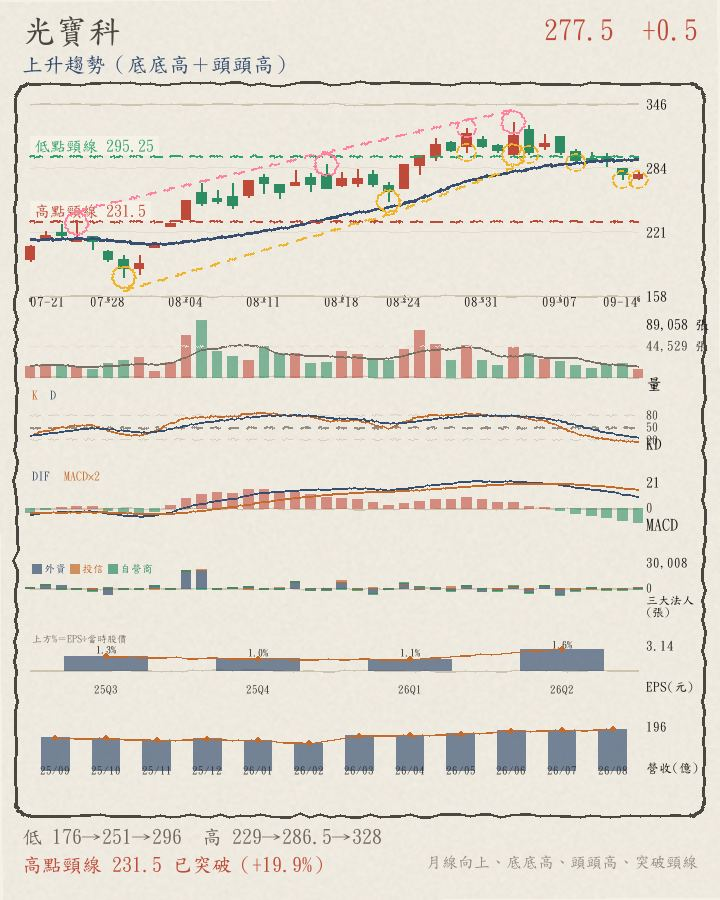
今天收紅、但成交量比平均少、跌破月線 291.95，跌破前一個轉折低點（高點頸線 325 還在收盤上方），轉折結構仍是底底高＋頭頭高。
- 月線位置：收盤 277.5 在月線 291.95 之下；5 日線 285.8 也在月線之下（短均在下）；月線向上、5 日線走平或向下
- 量能：成交量是 20 日均量的 0.38 倍，比 20 日均量少很多；收紅但量縮，量價背離
- 關鍵價位：高點頸線 325 還沒突破、還在收盤上方 14.6%；最近轉折高點 328（低於 15.4%）；最近轉折低點 296.5（低於 6.4%）
- 轉折結構：低點 176.5、251、296.5 一路墊高 68.0%、高點 229、286.5、328 也一路墊高 43.2%，是底底高＋頭頭高；還沒確認的轉折低點 09-11 272、09-14 272；還沒確認的轉折高點 08-28 322（圖上虛線小圈）
底部墊高、突破前高 成交金額 34.15 億・全榜第 54 名（上市第 40 名）
好條件 7/8：站上月線、月線向上、底底高、頭頭高、突破頸線、相對大盤強、量價攻擊（收紅＋大量）
不好條件 1/8：外資賣超
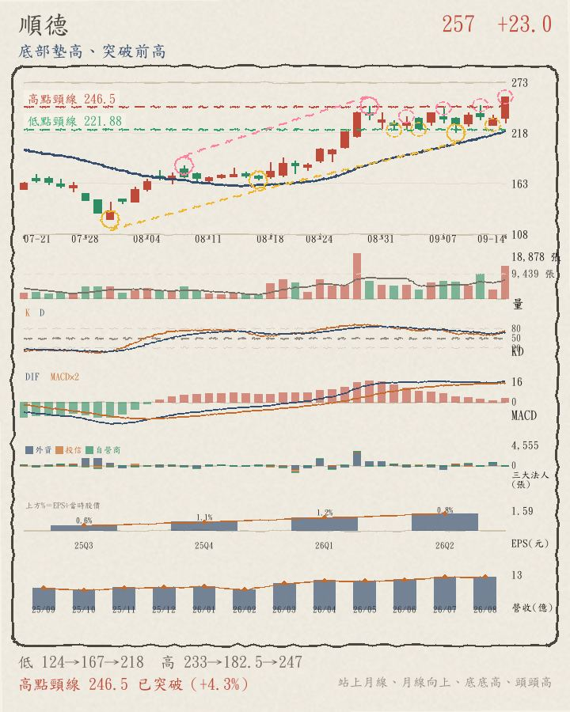
今天帶量收紅、站上月線 220.05，已站上高點頸線 246.5，轉折結構仍是底底高＋頭頭高。
- 月線位置：收盤 257 在月線 220.05 之上；5 日線 238.3 也在月線之上（短均在上）；月線向上、5 日線向上
- 量能：成交量是 20 日均量的 2.12 倍，比 20 日均量大不少；收紅又量增，量價配合
- 關鍵價位：高點頸線 246.5 已站上；最近轉折高點 247（高於 4.0%）；最近轉折低點 218（高於 17.9%）
- 轉折結構：低點 124、167、218 一路墊高 75.8%、高點 233、182.5、247 也一路墊高 4.0%，是底底高＋頭頭高；還沒確認的轉折低點 09-03 222、09-11 226.5；還沒確認的轉折高點 09-10 248、09-14 257（圖上虛線小圈）
上升趨勢（底底高＋頭頭高） 成交金額 33.2 億・全榜第 56 名（上市第 41 名）
好條件 7/8：站上月線、月線向上、底底高、頭頭高、突破頸線、相對大盤強、量價攻擊（收紅＋大量）
不好條件 1/8：外資賣超
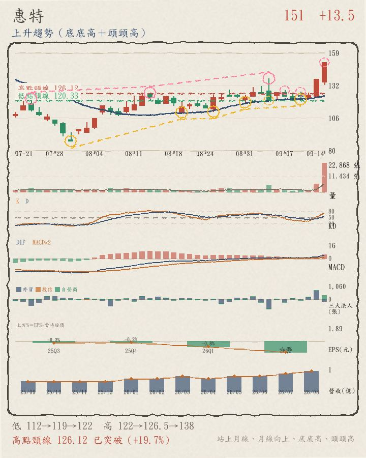
今天帶量收紅、站上月線 124.175，已站上高點頸線 126.12，轉折結構仍是底底高＋頭頭高。
- 月線位置：收盤 151 在月線 124.175 之上；5 日線 132.1 也在月線之上（短均在上）；月線向上、5 日線向上
- 量能：成交量是 20 日均量的 13.13 倍，比 20 日均量大不少；收紅又量增，量價配合
- 關鍵價位：高點頸線 126.12 已站上；最近轉折高點 138（高於 9.4%）；最近轉折低點 121.5（高於 24.3%）
- 轉折結構：低點 111.5、119、121.5 一路墊高 9.0%、高點 122、126.5、138 也一路墊高 13.1%，是底底高＋頭頭高；還沒確認的轉折低點 09-03 120.5；還沒確認的轉折高點 09-09 127.5、09-14 151（圖上虛線小圈）
高點墊高、底部不穩 成交金額 32.01 億・全榜第 57 名（上市第 42 名）
好條件 3/8：站上月線、月線向上、頭頭高
不好條件 3/8：今日下跌、相對大盤弱、外資賣超
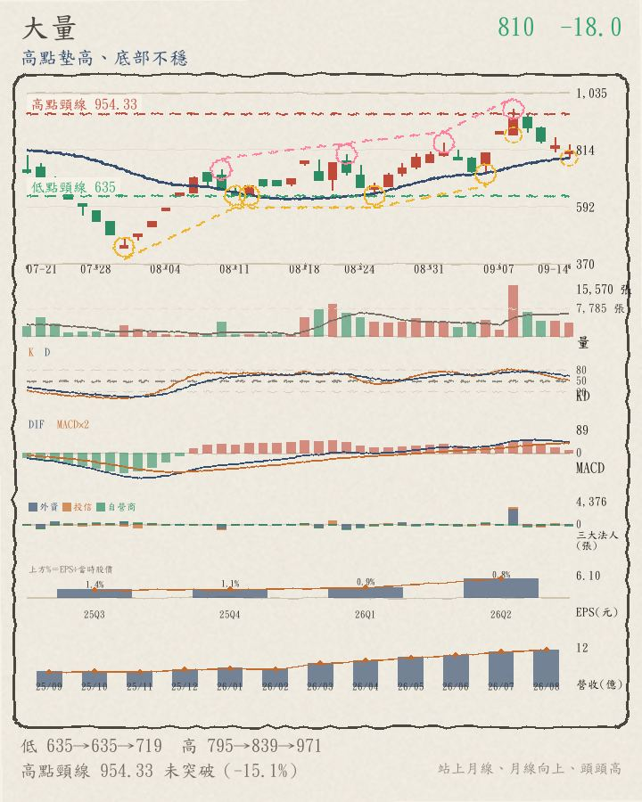
今天收黑、成交量也比平均少、站上月線 781.9，離高點頸線 954.33 還差 15.1%，高點還在墊高（但底部沒同步墊高）。
- 月線位置：收盤 810 在月線 781.9 之上；5 日線 864.8 也在月線之上（短均在上）；月線向上、5 日線向上
- 量能：成交量是 20 日均量的 0.72 倍，比 20 日均量少很多
- 關鍵價位：高點頸線 954.33 還沒突破，差 15.1%；最近轉折高點 971（低於 16.6%）；最近轉折低點 719（高於 12.7%）
- 轉折結構：高點 795、839、971 墊高 22.1%（頭頭高），但低點 635、635、719 沒有同步墊高；還沒確認的轉折低點 09-08 871、09-14 781（圖上虛線小圈）
底部墊高、未過前高 成交金額 30.37 億・全榜第 58 名（上市第 43 名）
好條件 3/8：月線向上、底底高、相對大盤強
不好條件 2/8：在月線之下、外資賣超
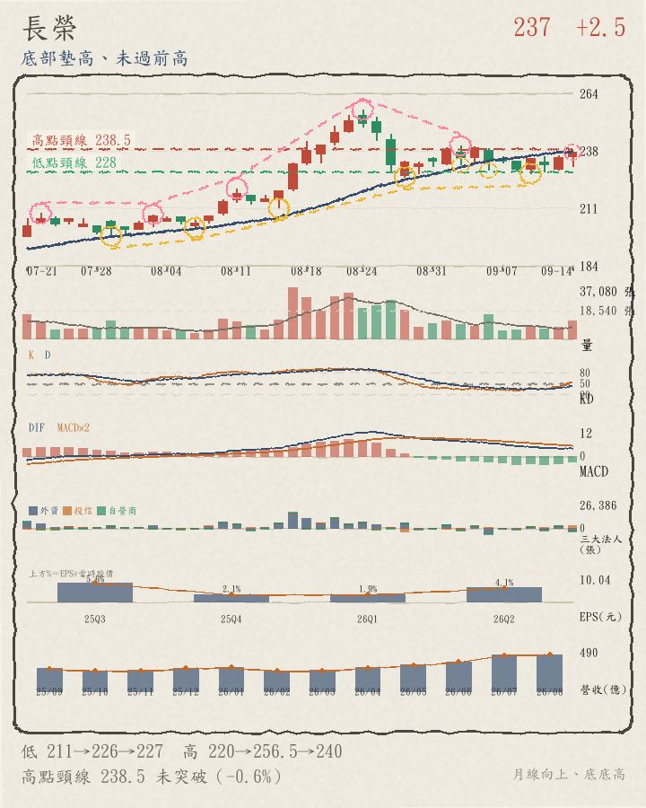
今天收紅、但成交量比平均少、跌破月線 237.2，離高點頸線 238.5 還差 0.6%，底部還在墊高（但高點沒同步創高）。
- 月線位置：收盤 237 在月線 237.2 之下；5 日線 233.1 也在月線之下（短均在下）；月線向上、5 日線走平或向下
- 量能：成交量是 20 日均量的 0.74 倍，比 20 日均量少很多；收紅但量縮，量價背離
- 關鍵價位：高點頸線 238.5 還沒突破，差 0.6%；最近轉折高點 240（低於 1.2%）；最近轉折低點 227（高於 4.4%）
- 轉折結構：低點 211、225.5、227 墊高 7.6%（底底高），但高點 220、256.5、240 沒有同步創高；還沒確認的轉折低點 09-02 231、09-04 228.5；還沒確認的轉折高點 09-14 237（圖上虛線小圈）
底部墊高、未過前高 成交金額 30.13 億・全榜第 59 名（上市第 44 名）
好條件 1/8：底底高
不好條件 8/8：跌破前低、今日下跌、相對大盤弱、在月線之下、量增下跌（出貨）、外資賣超、月線下彎、收盤跌破前一日低點
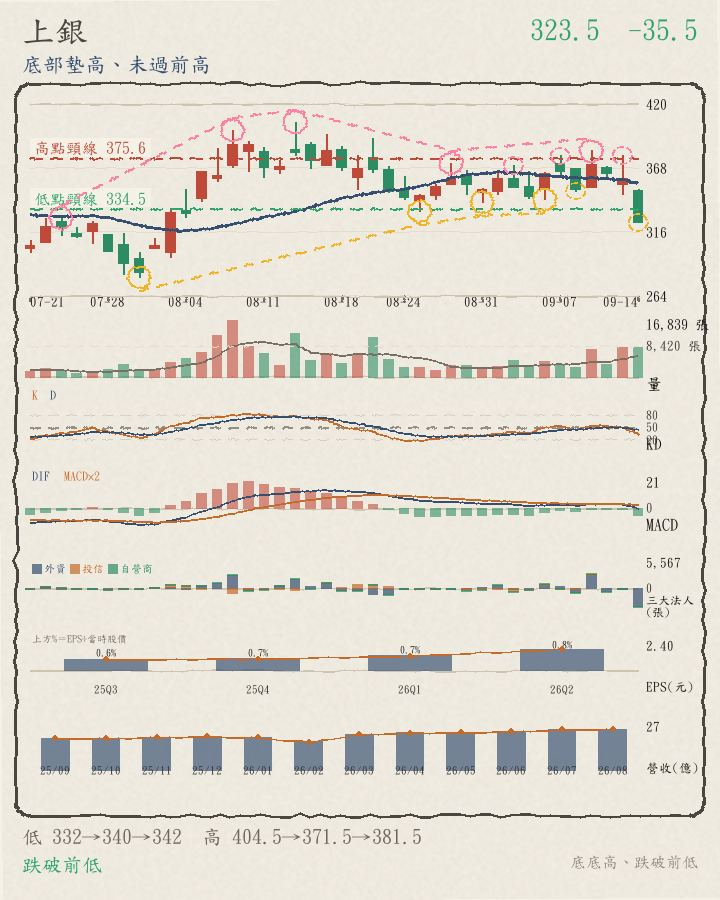
今天帶量收黑、跌破月線 355.25，跌破前一個轉折低點（高點頸線 375.6 還在收盤上方），底部還在墊高（但高點沒同步創高）。
- 月線位置：收盤 323.5 在月線 355.25 之下；5 日線 353.2 也在月線之下（短均在下）；月線走平或向下、5 日線走平或向下
- 量能：成交量是 20 日均量的 1.88 倍，比 20 日均量大不少；收黑卻量增，量價背離
- 關鍵價位：高點頸線 375.6 還沒突破、還在收盤上方 13.9%；最近轉折高點 381.5（低於 15.2%）；最近轉折低點 342（低於 5.4%）
- 轉折結構：低點 332.5、340、342 墊高 2.9%（底底高），但高點 404.5、371.5、381.5 沒有同步創高；還沒確認的轉折低點 09-08 349、09-14 323.5；還沒確認的轉折高點 09-07 377.5、09-11 378（圖上虛線小圈）
區間或轉弱 成交金額 30.09 億・全榜第 60 名（上市第 45 名）
好條件 4/8：站上月線、月線向上、相對大盤強、外資買超
不好條件 1/8：今日下跌
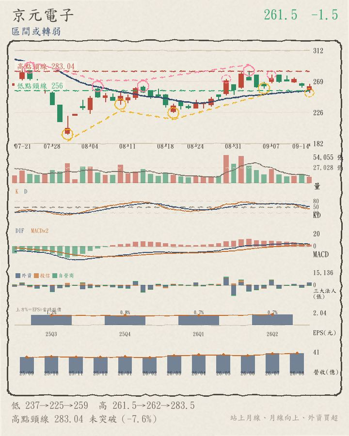
今天收黑、成交量也比平均少、站上月線 255.75，離高點頸線 283.04 還差 7.6%，轉折還沒走出明顯方向。
- 月線位置：收盤 261.5 在月線 255.75 之上；5 日線 266.9 也在月線之上（短均在上）；月線向上、5 日線走平或向下
- 量能：成交量是 20 日均量的 0.54 倍，比 20 日均量少很多
- 關鍵價位：高點頸線 283.04 還沒突破，差 7.6%；最近轉折高點 283.5（低於 7.8%）；最近轉折低點 259（高於 1.0%）
- 轉折結構：低點 237、225、259 與高點 261.5、262、283.5 都沒有明顯遞增，屬於區間震盪或轉弱；還沒確認的轉折低點 09-14 253；還沒確認的轉折高點 08-28 272、09-07 278（圖上虛線小圈）
區間或轉弱 成交金額 29.46 億・全榜第 61 名（上市第 46 名）
好條件 2/8：相對大盤強、外資買超
不好條件 3/8：今日下跌、在月線之下、月線下彎
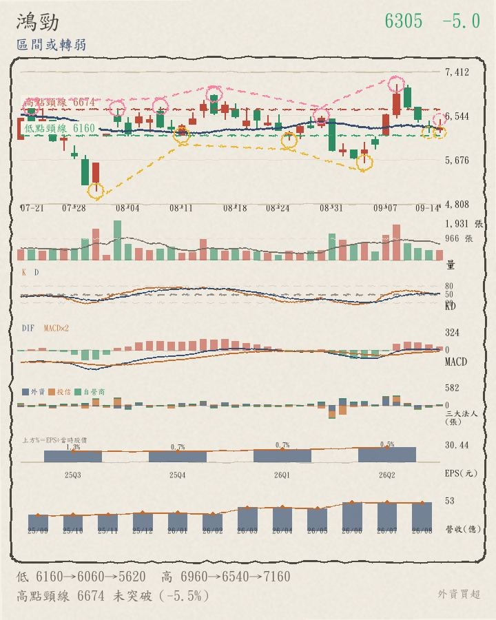
今天收黑、成交量也比平均少、跌破月線 6305，離高點頸線 6674 還差 5.5%，轉折還沒走出明顯方向。
- 月線位置：收盤 6305 在月線 6305 之下；5 日線 6556 也在月線之上（短均在上）；月線走平或向下、5 日線向上
- 量能：成交量是 20 日均量的 0.69 倍，比 20 日均量少很多
- 關鍵價位：高點頸線 6674 還沒突破，差 5.5%；最近轉折高點 7160（低於 11.9%）；最近轉折低點 5620（高於 12.2%）
- 轉折結構：低點 6160、6060、5620 與高點 6960、6540、7160 都沒有明顯遞增，屬於區間震盪或轉弱；還沒確認的轉折低點 09-11 6210、09-14 6210；還沒確認的轉折高點 09-14 6470（圖上虛線小圈）
底部墊高、未過前高 成交金額 29.17 億・全榜第 62 名（上市第 47 名）
好條件 2/8：月線向上、底底高
不好條件 5/8：今日下跌、相對大盤弱、在月線之下、外資賣超、收盤跌破前一日低點
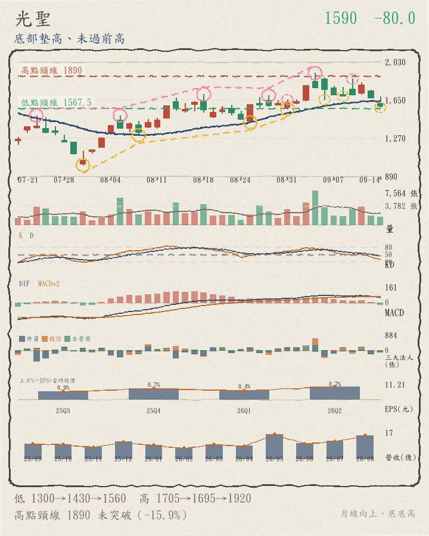
今天收黑、成交量也比平均少、跌破月線 1639.5，離高點頸線 1890 還差 15.9%，底部還在墊高（但高點沒同步創高）。
- 月線位置：收盤 1590 在月線 1639.5 之下；5 日線 1691 也在月線之上（短均在上）；月線向上、5 日線走平或向下
- 量能：成交量是 20 日均量的 0.58 倍，比 20 日均量少很多
- 關鍵價位：高點頸線 1890 還沒突破，差 15.9%；最近轉折高點 1920（低於 17.2%）；最近轉折低點 1560（高於 1.9%）
- 轉折結構：低點 1300、1430、1560 墊高 20.0%（底底高），但高點 1705、1695、1920 沒有同步創高；還沒確認的轉折低點 09-08 1690、09-14 1575；還沒確認的轉折高點 08-31 1655、09-09 1860（圖上虛線小圈）
底部墊高、未過前高 成交金額 28.89 億・全榜第 64 名（上市第 48 名）
好條件 3/8：月線向上、底底高、相對大盤強
不好條件 3/8：今日下跌、在月線之下、外資賣超
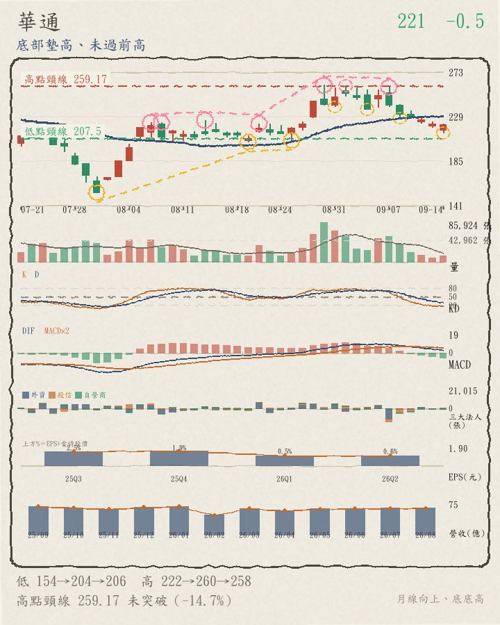
今天收黑、成交量也比平均少、跌破月線 229.425，離高點頸線 259.17 還差 14.7%，底部還在墊高（但高點沒同步創高）。
- 月線位置：收盤 221 在月線 229.425 之下；5 日線 225.4 也在月線之下（短均在下）；月線向上、5 日線走平或向下
- 量能：成交量是 20 日均量的 0.38 倍，比 20 日均量少很多
- 關鍵價位：高點頸線 259.17 還沒突破，差 14.7%；最近轉折高點 258（低於 14.3%）；最近轉折低點 205.5（高於 7.5%）
- 轉折結構：低點 154、204、205.5 墊高 33.4%（底底高），但高點 222、260、258 沒有同步創高；還沒確認的轉折低點 09-08 227.5、09-14 213；還沒確認的轉折高點 09-01 259.5（圖上虛線小圈）
區間或轉弱 成交金額 28.83 億・全榜第 65 名（上市第 49 名）
好條件 4/8：站上月線、月線向上、相對大盤強、外資買超
不好條件 0/8：無
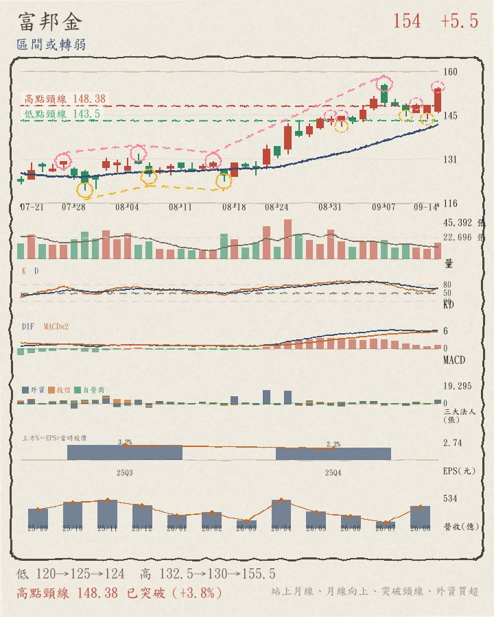
今天收紅、但成交量比平均少、站上月線 142.2，離高點頸線 155 還差 0.6%，轉折還沒走出明顯方向。
- 月線位置：收盤 154 在月線 142.2 之上；5 日線 149.4 也在月線之上（短均在上）；月線向上、5 日線向上
- 量能：成交量是 20 日均量的 0.87 倍，比 20 日均量少一些；收紅但量縮，量價背離
- 關鍵價位：高點頸線 155 還沒突破，差 0.6%；最近轉折高點 155.5（低於 1.0%）；最近轉折低點 123.5（高於 24.7%）
- 轉折結構：低點 120.5、125、123.5 與高點 132.5、130、155.5 都沒有明顯遞增，屬於區間震盪或轉弱；還沒確認的轉折低點 09-09 145、09-11 144；還沒確認的轉折高點 09-10 149、09-14 154.5（圖上虛線小圈）
區間或轉弱 成交金額 28.65 億・全榜第 66 名（上市第 50 名）
好條件 1/8：外資買超
不好條件 5/8：跌破前低、今日下跌、相對大盤弱、在月線之下、月線下彎
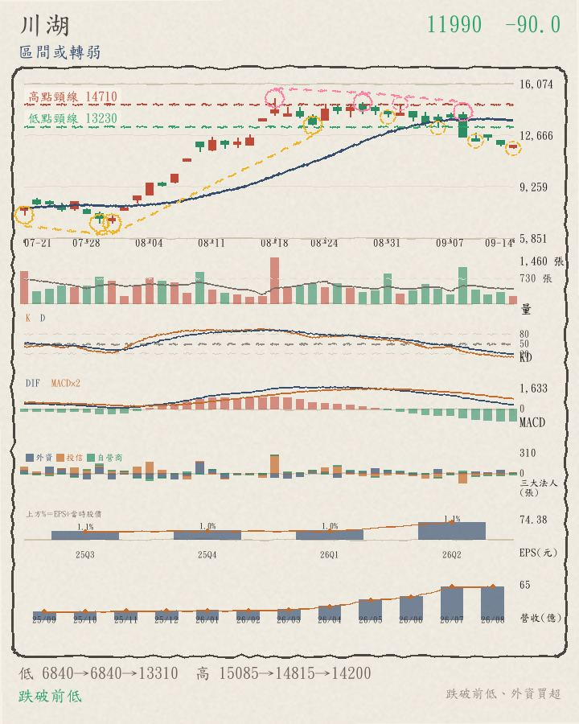
今天收黑、成交量也比平均少、跌破月線 13631，跌破前一個轉折低點（高點頸線 14880 還在收盤上方），轉折還沒走出明顯方向。
- 月線位置：收盤 11990 在月線 13631 之下；5 日線 12318 也在月線之下（短均在下）；月線走平或向下、5 日線走平或向下
- 量能：成交量是 20 日均量的 0.41 倍，比 20 日均量少很多
- 關鍵價位：高點頸線 14880 還沒突破、還在收盤上方 19.4%；最近轉折高點 14200（低於 15.6%）；最近轉折低點 13310（低於 9.9%）
- 轉折結構：低點 6840、6840、13310 與高點 15085、14815、14200 都沒有明顯遞增，屬於區間震盪或轉弱；還沒確認的轉折低點 09-09 12285、09-14 11785；還沒確認的轉折高點 09-01 14740（圖上虛線小圈）
底部墊高、未過前高 成交金額 169.15 億・全榜第 6 名（上櫃第 1 名）
好條件 5/8：站上月線、月線向上、底底高、相對大盤強、量價攻擊（收紅＋大量）
不好條件 1/8：外資賣超
今天帶量收紅、站上月線 481.625，離高點頸線 532.5 還差 2.7%，底部還在墊高（但高點沒同步創高）。
- 月線位置：收盤 518 在月線 481.625 之上；5 日線 514 也在月線之上（短均在上）；月線向上、5 日線向上
- 量能：成交量是 20 日均量的 1.82 倍，比 20 日均量大不少；收紅又量增，量價配合
- 關鍵價位：高點頸線 532.5 還沒突破，差 2.7%；最近轉折高點 535（低於 3.2%）；最近轉折低點 469.5（高於 10.3%）
- 轉折結構：低點 392、399、469.5 墊高 19.8%（底底高），但高點 462、564、535 沒有同步創高；還沒確認的轉折低點 09-14 477；還沒確認的轉折高點 09-14 530（圖上虛線小圈）
剛突破前高 成交金額 99.83 億・全榜第 13 名（上櫃第 2 名）
好條件 4/8：頭頭高、相對大盤強、外資買超、量價攻擊（收紅＋大量）
不好條件 2/8：在月線之下、月線下彎
今天帶量收紅、跌破月線 1437.75，離高點頸線 1428.33 還差 1.3%，高點還在墊高（但底部沒同步墊高）。
- 月線位置：收盤 1410 在月線 1437.75 之下；5 日線 1372 也在月線之下（短均在下）；月線走平或向下、5 日線走平或向下
- 量能：成交量是 20 日均量的 1.37 倍，比 20 日均量大不少；收紅又量增，量價配合
- 關鍵價位：高點頸線 1428.33 還沒突破，差 1.3%；最近轉折高點 1430（低於 1.4%）；最近轉折低點 1295（高於 8.9%）
- 轉折結構：高點 1730、1565、1430 墊高 0.7%（頭頭高），但低點 1455、1395、1295 沒有同步墊高；還沒確認的轉折低點 09-09 1315、09-14 1320；還沒確認的轉折高點 09-14 1440（圖上虛線小圈）
區間或轉弱 成交金額 76.05 億・全榜第 20 名（上櫃第 3 名）
好條件 5/8：站上月線、月線向上、相對大盤強、外資買超、量價攻擊（收紅＋大量）
不好條件 0/8：無
今天帶量收紅、站上月線 178.775，離高點頸線 189.25 還差 0.1%，轉折還沒走出明顯方向。
- 月線位置：收盤 189 在月線 178.775 之上；5 日線 189 也在月線之上（短均在上）；月線向上、5 日線向上
- 量能：成交量是 20 日均量的 1.19 倍，比 20 日均量大不少；收紅又量增，量價配合
- 關鍵價位：高點頸線 189.25 還沒突破，差 0.1%；最近轉折高點 203（低於 6.9%）；最近轉折低點 152（高於 24.3%）
- 轉折結構：低點 113.5、155.5、152 與高點 171、203、203 都沒有明顯遞增，屬於區間震盪或轉弱；還沒確認的轉折低點 09-03 174、09-14 171；還沒確認的轉折高點 09-04 202.5、09-14 191.5（圖上虛線小圈）
剛突破前高 成交金額 74.57 億・全榜第 22 名（上櫃第 4 名）
好條件 5/8：站上月線、月線向上、頭頭高、突破頸線、外資買超
不好條件 4/8：今日下跌、相對大盤弱、量增下跌（出貨）、收盤跌破前一日低點
今天帶量收黑、站上月線 389.85，已站上高點頸線 424.75，高點還在墊高（但底部沒同步墊高）。
- 月線位置：收盤 429.5 在月線 389.85 之上；5 日線 466.9 也在月線之上（短均在上）；月線向上、5 日線向上
- 量能：成交量是 20 日均量的 1.25 倍，比 20 日均量大不少；收黑卻量增，量價背離
- 關鍵價位：高點頸線 424.75 已站上；最近轉折高點 431（低於 0.3%）；最近轉折低點 289（高於 48.6%）
- 轉折結構：高點 351.5、328.5、431 墊高 15.1%（頭頭高），但低點 301、288、289 沒有同步墊高；還沒確認的轉折低點 09-03 393、09-14 417.5；還沒確認的轉折高點 09-11 496（圖上虛線小圈）
上升趨勢（底底高＋頭頭高） 成交金額 73.34 億・全榜第 23 名（上櫃第 5 名）
好條件 6/8：站上月線、月線向上、底底高、頭頭高、相對大盤強、量價攻擊（收紅＋大量）
不好條件 1/8：外資賣超
今天帶量收紅、站上月線 243.925，轉折結構仍是底底高＋頭頭高。
- 月線位置：收盤 293.5 在月線 243.925 之上；5 日線 284.1 也在月線之上（短均在上）；月線向上、5 日線向上
- 量能：成交量是 20 日均量的 1.42 倍，比 20 日均量大不少；收紅又量增，量價配合
- 關鍵價位：最近轉折高點 270.5（高於 8.5%）；最近轉折低點 190.5（高於 54.1%）
- 轉折結構：低點 132.5、189.5、190.5 一路墊高 43.8%、高點 178、230、270.5 也一路墊高 52.0%，是底底高＋頭頭高；還沒確認的轉折低點 09-10 265.5、09-14 272.5；還沒確認的轉折高點 09-07 286.5、09-11 321（圖上虛線小圈）
高點墊高、底部不穩 成交金額 72.27 億・全榜第 25 名（上櫃第 6 名）
好條件 2/8：月線向上、頭頭高
不好條件 4/8：今日下跌、相對大盤弱、在月線之下、外資賣超
今天收黑、成交量也比平均少、跌破月線 3038.5，離高點頸線 3107.5 還差 11.7%，高點還在墊高（但底部沒同步墊高）。
- 月線位置：收盤 2745 在月線 3038.5 之下；5 日線 2820 也在月線之下（短均在下）；月線向上、5 日線走平或向下
- 量能：成交量是 20 日均量的 0.67 倍，比 20 日均量少很多
- 關鍵價位：高點頸線 3107.5 還沒突破，差 11.7%；最近轉折高點 3600（低於 23.8%）；最近轉折低點 1450（高於 89.3%）
- 轉折結構：高點 2010、3065、3600 墊高 79.1%（頭頭高），但低點 1668.18、1335、1450 沒有同步墊高；還沒確認的轉折低點 09-04 2980、09-14 2685；還沒確認的轉折高點 09-09 3150、09-14 2830（圖上虛線小圈）
區間或轉弱 成交金額 63.53 億・全榜第 30 名（上櫃第 7 名）
好條件 2/8：站上月線、月線向上
不好條件 4/8：今日下跌、相對大盤弱、外資賣超、收盤跌破前一日低點
今天收黑、成交量也比平均少、站上月線 114.442，離高點頸線 132.29 還差 9.3%，轉折還沒走出明顯方向。
- 月線位置：收盤 120 在月線 114.442 之上；5 日線 125.614 也在月線之上（短均在上）；月線向上、5 日線向上
- 量能：成交量是 20 日均量的 0.64 倍，比 20 日均量少很多
- 關鍵價位：高點頸線 132.29 還沒突破，差 9.3%；最近轉折高點 135（低於 11.1%）；最近轉折低點 108.571（高於 10.5%）
- 轉折結構：低點 70.857、56.2856、108.571 與高點 95.1427、89.4284、135 都沒有明顯遞增，屬於區間震盪或轉弱；還沒確認的轉折低點 09-08 117.143、09-14 119.5；還沒確認的轉折高點 09-03 132.857、09-11 129（圖上虛線小圈）
上升趨勢（底底高＋頭頭高） 成交金額 58.62 億・全榜第 35 名（上櫃第 8 名）
好條件 6/8：站上月線、月線向上、底底高、頭頭高、突破頸線、外資買超
不好條件 3/8：今日下跌、相對大盤弱、量增下跌（出貨）
今天帶量收黑、站上月線 128.175，已站上高點頸線 142.25，轉折結構仍是底底高＋頭頭高。
- 月線位置：收盤 160.5 在月線 128.175 之上；5 日線 150.6 也在月線之上（短均在上）；月線向上、5 日線向上
- 量能：成交量是 20 日均量的 2.07 倍，比 20 日均量大不少；收黑卻量增，量價背離
- 關鍵價位：高點頸線 142.25 已站上；最近轉折高點 144（高於 11.5%）；最近轉折低點 123.5（高於 30.0%）
- 轉折結構：低點 62.2、77.9、123.5 一路墊高 98.6%、高點 95.8、140.5、144 也一路墊高 50.3%，是底底高＋頭頭高；還沒確認的轉折低點 08-31 127.5、09-02 130；還沒確認的轉折高點 09-14 173（圖上虛線小圈）
區間或轉弱 成交金額 58.55 億・全榜第 36 名（上櫃第 9 名）
好條件 4/8：站上月線、月線向上、相對大盤強、外資買超
不好條件 0/8：無
今天收紅、但成交量比平均少、站上月線 425.875，離高點頸線 487.33 還差 8.9%，轉折還沒走出明顯方向。
- 月線位置：收盤 444 在月線 425.875 之上；5 日線 449.7 也在月線之上（短均在上）；月線向上、5 日線走平或向下
- 量能：成交量是 20 日均量的 0.48 倍，比 20 日均量少很多；收紅但量縮，量價背離
- 關鍵價位：高點頸線 487.33 還沒突破，差 8.9%；最近轉折高點 478（低於 7.1%）；最近轉折低點 438.5（高於 1.3%）
- 轉折結構：低點 351、349.5、438.5 與高點 492、492、478 都沒有明顯遞增，屬於區間震盪或轉弱；還沒確認的轉折低點 09-08 440、09-14 420；還沒確認的轉折高點 09-14 451（圖上虛線小圈）
剛突破前高 成交金額 54.48 億・全榜第 40 名（上櫃第 10 名）
好條件 5/8：站上月線、月線向上、頭頭高、突破頸線、相對大盤強
不好條件 3/8：今日下跌、量增下跌（出貨）、外資賣超
今天帶量收黑、站上月線 95.03，已站上高點頸線 99.15，高點還在墊高（但底部沒同步墊高）。
- 月線位置：收盤 124 在月線 95.03 之上；5 日線 112.42 也在月線之上（短均在上）；月線向上、5 日線向上
- 量能：成交量是 20 日均量的 3.72 倍，比 20 日均量大不少；收黑卻量增，量價背離
- 關鍵價位：高點頸線 99.15 已站上；最近轉折高點 98.9（高於 25.4%）；最近轉折低點 84.8（高於 46.2%）
- 轉折結構：高點 163、99.4、98.9 墊高 29.9%（頭頭高），但低點 82.5、81.8、84.8 沒有同步墊高；還沒確認的轉折低點 08-31 87.3；還沒確認的轉折高點 09-14 128.5（圖上虛線小圈）
剛突破前高 成交金額 48.36 億・全榜第 43 名（上櫃第 11 名）
好條件 7/8：站上月線、月線向上、頭頭高、突破頸線、相對大盤強、外資買超、量價攻擊（收紅＋大量）
不好條件 0/8：無
今天帶量收紅、站上月線 172.025，已站上高點頸線 172.5，高點還在墊高（但底部沒同步墊高）。
- 月線位置：收盤 241 在月線 172.025 之上；5 日線 215.1 也在月線之上（短均在上）；月線向上、5 日線向上
- 量能：成交量是 20 日均量的 12.14 倍，比 20 日均量大不少；收紅又量增，量價配合
- 關鍵價位：高點頸線 172.5 已站上；最近轉折高點 172（高於 40.1%）；最近轉折低點 155（高於 55.5%）
- 轉折結構：高點 163.5、173、172 墊高 50.6%（頭頭高），但低點 145.5、156、155 沒有同步墊高；還沒確認的轉折高點 09-14 259（圖上虛線小圈）
底部墊高、未過前高 成交金額 39.85 億・全榜第 49 名（上櫃第 12 名）
好條件 2/8：底底高、外資買超
不好條件 5/8：跌破前低、今日下跌、相對大盤弱、在月線之下、月線下彎
今天收黑、成交量也比平均少、跌破月線 2065.5，跌破前一個轉折低點（高點頸線 2175 還在收盤上方），底部還在墊高（但高點沒同步創高）。
- 月線位置：收盤 1935 在月線 2065.5 之下；5 日線 2032 也在月線之下（短均在下）；月線走平或向下、5 日線走平或向下
- 量能：成交量是 20 日均量的 0.56 倍，比 20 日均量少很多
- 關鍵價位：高點頸線 2175 還沒突破、還在收盤上方 11.0%；最近轉折高點 2160（低於 10.4%）；最近轉折低點 1970（低於 1.8%）
- 轉折結構：低點 1445、1905、1970 墊高 36.3%（底底高），但高點 2215、2195、2160 沒有同步創高；還沒確認的轉折低點 09-14 1910；還沒確認的轉折高點 09-01 2185、09-03 2120（圖上虛線小圈）
高點墊高、底部不穩 成交金額 36.9 億・全榜第 51 名（上櫃第 13 名）
好條件 4/8：站上月線、月線向上、頭頭高、相對大盤強
不好條件 1/8：外資賣超
今天收紅、但成交量比平均少、站上月線 16948，離高點頸線 18487.6 還差 2.7%，高點還在墊高（但底部沒同步墊高）。
- 月線位置：收盤 17980 在月線 16948 之上；5 日線 18478 也在月線之上（短均在上）；月線向上、5 日線向上
- 量能：成交量是 20 日均量的 0.70 倍，比 20 日均量少很多；收紅但量縮，量價背離
- 關鍵價位：高點頸線 18487.6 還沒突破，差 2.7%；最近轉折高點 19795（低於 9.2%）；最近轉折低點 14600（高於 23.2%）
- 轉折結構：高點 16210、18600、19795 墊高 22.1%（頭頭高），但低點 12210、15930、14600 沒有同步墊高；還沒確認的轉折低點 08-28 14815、09-14 17170；還沒確認的轉折高點 09-03 18790（圖上虛線小圈）
區間或轉弱 成交金額 35.21 億・全榜第 52 名（上櫃第 14 名）
好條件 1/8：相對大盤強
不好條件 4/8：今日下跌、在月線之下、外資賣超、月線下彎
今天收黑、成交量也比平均少、跌破月線 961.35，離高點頸線 1011.8 還差 11.0%，轉折還沒走出明顯方向。
- 月線位置：收盤 900 在月線 961.35 之下；5 日線 925.8 也在月線之下（短均在下）；月線走平或向下、5 日線走平或向下
- 量能：成交量是 20 日均量的 0.47 倍，比 20 日均量少很多
- 關鍵價位：高點頸線 1011.8 還沒突破，差 11.0%；最近轉折高點 1015（低於 11.3%）；最近轉折低點 875（高於 2.9%）
- 轉折結構：低點 823、931、875 與高點 1035、1015、1015 都沒有明顯遞增，屬於區間震盪或轉弱；還沒確認的轉折低點 09-08 944、09-14 872；還沒確認的轉折高點 09-01 998（圖上虛線小圈）
區間或轉弱 成交金額 34.13 億・全榜第 55 名（上櫃第 15 名）
好條件 3/8：站上月線、月線向上、相對大盤強
不好條件 1/8：外資賣超
今天收紅、但成交量比平均少、站上月線 2466.25，離高點頸線 2797.5 還差 2.4%，轉折還沒走出明顯方向。
- 月線位置：收盤 2730 在月線 2466.25 之上；5 日線 2729 也在月線之上（短均在上）；月線向上、5 日線向上
- 量能：成交量是 20 日均量的 0.88 倍，比 20 日均量少一些；收紅但量縮，量價背離
- 關鍵價位：高點頸線 2797.5 還沒突破，差 2.4%；最近轉折高點 2875（低於 5.0%）；最近轉折低點 2090（高於 30.6%）
- 轉折結構：低點 2185、1995、2090 與高點 2825、2720、2875 都沒有明顯遞增，屬於區間震盪或轉弱；還沒確認的轉折低點 09-03 2330、09-14 2530；還沒確認的轉折高點 09-01 2640、09-14 2770（圖上虛線小圈）
區間或轉弱 成交金額 28.9 億・全榜第 63 名（上櫃第 16 名）
好條件 3/8：站上月線、相對大盤強、外資買超
不好條件 2/8：今日下跌、月線下彎
今天收黑、成交量也比平均少、站上月線 5386.5，離高點頸線 5670 還差 1.3%，轉折還沒走出明顯方向。
- 月線位置：收盤 5595 在月線 5386.5 之上；5 日線 5649 也在月線之上（短均在上）；月線走平或向下、5 日線向上
- 量能：成交量是 20 日均量的 0.45 倍，比 20 日均量少很多
- 關鍵價位：高點頸線 5670 還沒突破，差 1.3%；最近轉折高點 6060（低於 7.7%）；最近轉折低點 4730（高於 18.3%）
- 轉折結構：低點 4650、5000、4730 與高點 6815、5585、6060 都沒有明顯遞增，屬於區間震盪或轉弱；還沒確認的轉折低點 09-03 5000、09-11 5365；還沒確認的轉折高點 09-11 5755（圖上虛線小圈）
高點墊高、底部不穩 成交金額 28.37 億・全榜第 67 名（上櫃第 17 名）
好條件 4/8：站上月線、月線向上、頭頭高、外資買超
不好條件 3/8：今日下跌、相對大盤弱、收盤跌破前一日低點
今天收黑、站上月線 3076.75，高點還在墊高（但底部沒同步墊高）。
- 月線位置：收盤 3375 在月線 3076.75 之上；5 日線 3551 也在月線之上（短均在上）；月線向上、5 日線向上
- 量能：成交量是 20 日均量的 0.99 倍，跟 20 日均量差不多
- 關鍵價位：最近轉折高點 3935（低於 14.2%）；最近轉折低點 2570（高於 31.3%）
- 轉折結構：高點 2975、3100、3935 墊高 32.3%（頭頭高），但低點 2400、2235、2570 沒有同步墊高；還沒確認的轉折低點 09-03 3235、09-14 3370；還沒確認的轉折高點 09-03 3585（圖上虛線小圈）
底部墊高、未過前高 成交金額 23.31 億・全榜第 68 名（上櫃第 18 名）
好條件 3/8：月線向上、底底高、外資買超
不好條件 4/8：跌破前低、今日下跌、相對大盤弱、在月線之下
今天收黑、成交量也比平均少、跌破月線 1305，跌破前一個轉折低點（高點頸線 1422 還在收盤上方），底部還在墊高（但高點沒同步創高）。
- 月線位置：收盤 1225 在月線 1305 之下；5 日線 1294 也在月線之下（短均在下）；月線向上、5 日線走平或向下
- 量能：成交量是 20 日均量的 0.61 倍，比 20 日均量少很多
- 關鍵價位：高點頸線 1422 還沒突破、還在收盤上方 13.9%；最近轉折高點 1435（低於 14.6%）；最近轉折低點 1280（低於 4.3%）
- 轉折結構：低點 1035、1150、1280 墊高 23.7%（底底高），但高點 1400、1455、1435 沒有同步創高；還沒確認的轉折低點 08-31 1280、09-14 1185；還沒確認的轉折高點 09-02 1410、09-03 1410（圖上虛線小圈）
高點墊高、底部不穩 成交金額 19.85 億・全榜第 69 名（上櫃第 19 名）
好條件 4/8：站上月線、月線向上、頭頭高、外資買超
不好條件 2/8：今日下跌、相對大盤弱
今天收黑、成交量也比平均少、站上月線 1385.5，離高點頸線 1433.75 還差 3.1%，高點還在墊高（但底部沒同步墊高）。
- 月線位置：收盤 1390 在月線 1385.5 之上；5 日線 1421 也在月線之上（短均在上）；月線向上、5 日線走平或向下
- 量能：成交量是 20 日均量的 0.90 倍，比 20 日均量少一些
- 關鍵價位：高點頸線 1433.75 還沒突破，差 3.1%；最近轉折高點 1570（低於 11.5%）；最近轉折低點 1220（高於 13.9%）
- 轉折結構：高點 1450、1555、1570 墊高 8.3%（頭頭高），但低點 1215、1210、1220 沒有同步墊高；還沒確認的轉折低點 09-03 1375、09-11 1310；還沒確認的轉折高點 09-14 1460（圖上虛線小圈）
區間或轉弱 成交金額 18.4 億・全榜第 70 名（上櫃第 20 名）
好條件 1/8：外資買超
不好條件 5/8：跌破前低、今日下跌、相對大盤弱、在月線之下、月線下彎
今天收黑、成交量也比平均少、跌破月線 109.225，跌破前一個轉折低點（高點頸線 117.5 還在收盤上方），轉折還沒走出明顯方向。
- 月線位置：收盤 103.5 在月線 109.225 之下；5 日線 107.2 也在月線之下（短均在下）；月線走平或向下、5 日線走平或向下
- 量能：成交量是 20 日均量的 0.30 倍，比 20 日均量少很多
- 關鍵價位：高點頸線 117.5 還沒突破、還在收盤上方 11.9%；最近轉折高點 119（低於 13.0%）；最近轉折低點 104（低於 0.5%）
- 轉折結構：低點 89.8、103.5、104 與高點 131、117.5、119 都沒有明顯遞增，屬於區間震盪或轉弱；還沒確認的轉折低點 09-08 109、09-14 100；還沒確認的轉折高點 09-01 116（圖上虛線小圈）